Details: statements, arguments, status
Agent-facing companion to the summary and to D. Pei, Construction of holomorphic SCFTs with minimal index, arXiv:2610.33165. Numbered statements; every one carries a label. Version of 28 October 2026 (first version: 26 October 2026).
Labels. proved a complete argument is given here or in a linked file of this folder; cited taken from the literature, with theorem numbers (numbers checked against the source text unless marked unchecked); computed an exact machine computation, reproducible with the code in this folder; assumed an input that is not derived; conjecture supported by data, not proved; open not known to us.
How to use this page. The paper explains the \(k=6\) seed, the symmetric-square arithmetic, the
transfer matrix of one cell and the \(D_4\) picture; where this page needs them it points to the paper's section
instead of repeating it. Code references are to code/ of this folder; data references to
certificates/. “GJF” is Gaiotto–Johnson-Freyd, arXiv:1811.00589
(Canad. J. Math. 74 (2022)). Notation: \(\mathbb F_3=\{0,1,2\}\) with \(2=-1\); a word has full support if no
coordinate is 0; its sign is \((-1)^{\#\{i:\,x_i=2\}}\); \(\mathrm{Index}(C)\) is the signed number of
full-support codewords; \(m_k:=\gcd(24,k)\). Chains (periodic or anti-periodic), boundary and internal coordinates
(\(r\) = number of boundary spins), the generator matrix \(R\), the transfer matrix \(M\) and the supercurrent \(G\)
are as in the paper; a candidate is one random choice of the cells of a chain, and counts of codes are counts
of distinct generator rowspaces. Supporting write-ups are in notes/ (working notes of 17–18 October, prepared for
publication: remarks about internal workflow were removed or reworded, while the mathematics, the corrections and the data
are unchanged; NOTE_k24_transfer.md also has four marked annotations; the notes use the older names ring,
cyclic/negacyclic, delayed); files described as “workspace, not
published” are in the project repository only.
- A. Codes, lattice SCFTs and the index; A.7: \(24\mid\mathrm{Index}(C)\) when \(12\mid n\); A.8: index \(\pm24\) at every length \(12k\)
- B. Transfer cells and chains
- C. The Hadamard–Paley census and the 2-adic theorem
- D. The 9-state transfer matrix by hand; the selection rule
- E. Permutation orbifolds
- F. \(k=8,16\): the order-8 obstruction and the quaternion orbifold
- G. Every \(k\): constructions, certificates, verification
- H. Field content of \(T\), \(T'\), \(T''\)
- I. The TMF side: power operations
- L. Landau–Ginzburg orbifolds, the gapping test and refined elliptic genera (paper §6.3–6.4, Appendix A)
- J. Open problems and conjectures
- R. Related work: Daniel Bruegmann's notes
- K. References
Update of 28 October 2026. Added section
R on related work by Daniel Bruegmann, with its reference in K. Two entries of the open
list J are removed because they are answered there: Conjecture A, and a direct code at \(k=12\) or
\(k=24\). The final numbers of our q8_k24 search (\(9.8\cdot10^9\) candidates, smallest balanced
\(|\text{index}|\) 1,152; previously \(1.5\cdot10^9\) and 3,456) are now in R.3. The wording of the skipped records in
E.4 is clarified. No other statement on this page has changed.
A. Codes, lattice SCFTs and the index
A.1 (Construction A and the \(\mathcal N=1\) structure). cited Let \(C\subset\mathbb F_3^n\) be self-dual. Then \(\Lambda(C)=\{x/\sqrt3:\ x\in\mathbb Z^n,\ x\bmod3\in C\}\) is an odd unimodular lattice, \(V_{\Lambda(C)}\) is a holomorphic SVOA of central charge \(n\), and the \(2n\) norm-3 vectors \(\pm\sqrt3e_i\) give an \(\mathcal N=1\) supercurrent. Self-duality forces \(4\mid n\); full-support codewords exist only if \(12\mid n\). GJF §2 (Construction A: Conway–Sloane). Paper §2 restates this.
A.2 (Index of a code theory).
cited The Ramond ground states of \(V_{\Lambda(C)}\) are in bijection with the
full-support codewords \(c\) (all \(c_i\neq0\)), with fermion parity the sign of the word, so the Witten index is
\(\mathrm{Index}(C)=\sum_{c\in C,\ \text{all }c_i\neq0}(-1)^{\#\{i:\,c_i=-\}}\), with \(-\) the element 2 of
\(\mathbb F_3\) (GJF Prop. 2.4, as read in the project notes; paper §2). The overall sign is a convention (one coordinate flip,
equivalently stacking with Arf, changes it). In this note the number of Ramond ground states of a code theory is
the number of full-support codewords; verify.py prints both numbers.
A.3 (Divisibility). cited GJF Thm 1.3: for \(n=12k\), \(24\mid\mathrm{Index}(C)\) if \(k\) is even and \(12\mid\mathrm{Index}(C)\) if \(k\) is odd; if \(12\nmid n\), \(\mathrm{Index}(C)=0\). GJF Conj. 1.4: \(24\mid\mathrm{Index}(C)\) for all \(k\ge1\), and for every \(k\ge1\) some self-dual code of length \(12k\) has index 24. (Statements and numbers checked against the arXiv text of GJF on 19 Oct.) proved Both sentences of Conj. 1.4 hold: the first by A.7 (\(8\mid\mathrm{Index}(C)\) by an elementary argument, the factor 3 from GJF Thm 1.3), the second by A.8 (an explicit code of index \((-1)^k\,24\) at every length \(12k\)). Both proofs are also written up as the note The index of self-dual ternary codes, which the paper cites.
A.4 (Code automorphisms act). cited GJF Thm 3.1: the group of monomial automorphisms of \(C\) (signed permutations preserving \(C\)) lifts to \(\mathrm{Aut}_{\mathcal N=1}(V_{\Lambda(C)})\); the extension \(\hat\Lambda(C)[2].\mathrm{Aut}(C)\) splits, so the lift \(g\mapsto\hat g\) is a homomorphism. Hence a monomial \(Q_8\) acts as an honest \(Q_8\), with \(\widehat{-1}\) a bosonic involution (it negates every Heisenberg current, unlike \((-1)^F\)).
A.5 (GJF Theorem 5.6, in the form used). cited Let \(C\) be self-dual of length \(12k\) with \(\mathrm{Index}(C)=\pm24\), and \(g\) a monomial automorphism of order \(m=m_k\) such that (i) if \(m\) is even, \(g^{m/2}=-1\); (ii) if \(3\mid m\), \(h=g^{m/3}\) permutes the coordinates in \(4k\) disjoint 3-cycles and the full-support codewords fixed by \(h\) are balanced (as many of sign \(+\) as of sign \(-\)). Then the \(\mathbb Z_m\) action is non-anomalous and \(V_{\Lambda(C)}/\!\!/\mathbb Z_m\) is a holomorphic SCFT with index \(\pm24/m\). The paper's §3.3 paraphrases it the same way and flags the wording for checking against GJF. Mechanism proved: the orbifold index is \(\frac1m\sum_{a,b}Z(a,b)\); every \(Z(a,b)\) with \(\langle g^a,g^b\rangle\) containing \(-1\) vanishes (no fixed full-support words); the remaining terms are modular images of twining traces by powers of \(h\), which vanish by balance; what is left is \(\frac1m\mathrm{Index}(C)\).
A.6 (Groups with cyclic commuting pairs). proved, given non-anomaly Let a finite group \(G\) act on \(C\) by monomial automorphisms such that every commuting pair \((a,b)\) generates a cyclic subgroup and every \(c\neq1\) has \(-1\) as a power. If the \(G\)-action on \(V_{\Lambda(C)}\) is non-anomalous, \(\mathrm{Index}(V/\!\!/G)=\mathrm{Index}(C)/|G|\). Proof. \(\mathrm{Index}(V/\!\!/G)=\frac1{|G|}\sum_{ab=ba}Z(a,b)\). For \((a,b)\neq(1,1)\), \(\langle a,b\rangle=\langle c\rangle\) is cyclic and \(Z(a,b)\) is an \(SL_2(\mathbb Z)\)-image of \(Z(1,c')\) for a generator \(c'\neq1\), the twined Witten index, i.e. the signed count of \(c'\)-fixed full-support words; it vanishes because \(-1\in\langle c'\rangle\) fixes no full-support word. Only \(Z(1,1)=\mathrm{Index}(C)\) survives. ∎ For \(Q_8\): commuting pairs lie in \(\langle\pm1,x\rangle\cong\mathbb Z_4\) and \(x^2=-1\) for every \(x\notin\{\pm1\}\). The Schur multiplier of \(Q_8\) is trivial (no discrete torsion), and the Arf twists \(H^1(Q_8,\mathbb Z_2)\) multiply only vanishing terms, so the result is independent of the spin twist. Which groups qualify. An element of odd order has no involution among its powers, so the second hypothesis forces \(G\) to be a 2-group in which \(-1\) is the unique involution; a finite 2-group with a unique involution is cyclic or generalised quaternion (the classical theorem on \(p\)-groups with a unique subgroup of order \(p\); cited, standard), and conversely in these groups every abelian subgroup is cyclic and every element \(\neq1\) has the involution as a power. \(Q_8\) is the case used here. Groups whose abelian subgroups are all cyclic but which contain elements of odd order, such as \(\mathrm{SL}(2,3)\) or the dicyclic groups of order \(4n\) with \(n\) not a power of 2, satisfy the first hypothesis but not the second; their odd-order elements would need a balance condition as in GJF Thm 5.6(ii), which is not used here.
A.7 The index is divisible by 24 when 12 divides the length (the divisibility half of GJF Conjecture 1.4)
Status. proved The proofs of A.7.1–A.7.5 are elementary and are given in full below; the corollary A.7.6 takes the factor 3 from GJF Thm 1.3 (cited). As additional checks (A.7.8), the statements were tested numerically, an adversarial referee (a separate AI agent with its own code) found no gap, and the Codex team's audit of 20 October 2026 reviewed the four lemmas directly and found no gap. A standalone version with the complete proof is Section 2 of the note on GJF Conjecture 1.4, ../gj-conjecture/index.html#divisibility; the paper cites that version.
What is proved. Divisibility: the first sentence of GJF Conj. 1.4, \(24\mid\mathrm{Index}(C)\) for every self-dual ternary code \(C\) of length \(n=12k\), for every \(k\ge1\). The second sentence, that for every \(k\ge1\) some self-dual code of length \(12k\) has index 24, is proved separately in A.8 by an explicit chain of Golay cells. A.7 and A.8 together prove the whole conjecture.
Literature. GJF state the coding-theoretic assertion as Conjecture 1.4; we are not aware of a prior proof (our search of 19 October 2026 was not exhaustive). GJF prove \(24\mid\mathrm{Index}(C)\) for \(24\mid n\) from the theta functions of the two even unimodular neighbours \(\Lambda^\pm\) of \(\Lambda(C)\) and a divisibility theorem of Borcherds (Invent. Math. 120 (1995), Thm 12.1; see also Hopkins, ICM 2002, Thm 5.10), and they get \(12\mid\mathrm{Index}(C)\) for \(n\equiv12\) mod 24 from \(\mathrm{Index}(C\oplus C)=\mathrm{Index}(C)^2\). For \(n\equiv12\) mod 24 the neighbours \(\Lambda^\pm\) are odd and their method stops; they say they know no elementary proof. Code neighbours do not appear in GJF. Separately, Yoshida (arXiv:2609.17359, September 2026) discusses the general SCFT/TMF divisibility constraint for holomorphic SCFTs, which is still conjectural and is not resolved by the code-specific results of A.7 and A.8.
Notation for A.7. Codes are subspaces of \(\mathbb F_3^n\) with \(x\cdot y=\sum_ix_iy_i\), and \(W^\perp\) is the dual of \(W\). Let \(\chi:\mathbb F_3\to\{0,\pm1\}\) be the quadratic character, \(\chi(0)=0\), \(\chi(1)=1\), \(\chi(2)=-1\), and for any set \(X\subseteq\mathbb F_3^n\) put \[\mathrm{Index}(X)=\sum_{x\in X}\ \prod_{i=1}^n\chi(x_i),\] the signed number of full-support vectors of \(X\); for a self-dual code this is \(\mathrm{Index}(C)\) of A.2. Two self-dual codes \(C\neq C'\) of length \(n\) are neighbours if \(\dim(C\cap C')=n/2-1\). Self-dual codes exist only for \(4\mid n\) (A.1). Throughout A.7 and A.8 the length \(n\) is positive (for \(n=0\) the empty word would count as a full-support word of index 1).
A.7.1 (Lemma 1, Poisson summation; needs \(4\mid n\)). proved If \(4\mid n\) and \(W\subseteq\mathbb F_3^n\) is a linear subspace, then \[\mathrm{Index}(W^\perp)=3^{\,n/2-\dim W}\,\mathrm{Index}(W).\] Proof. Let \(\omega=e^{2\pi i/3}\) and \(f(x)=\prod_i\chi(x_i)\). The Fourier transform factorises, \(\hat f(y)=\sum_xf(x)\,\omega^{x\cdot y}=\prod_i\hat\chi(y_i)\) with \(\hat\chi(t)=\sum_{s\in\mathbb F_3}\chi(s)\,\omega^{st}\). Here \(\hat\chi(0)=\chi(1)+\chi(2)=0\), and for \(t\neq0\) the substitution \(s\mapsto t^{-1}s\) gives \(\hat\chi(t)=\chi(t)(\omega-\omega^2)=\chi(t)\,i\sqrt3\). Hence \(\hat f=(i\sqrt3)^n f=3^{n/2}f\), because \(i^n=1\). Poisson summation over the subgroup \(W\), \[\sum_{y\in W}\hat f(y)=|W|\sum_{x\in W^\perp}f(x)\] (both sides equal \(\sum_xf(x)\sum_{y\in W}\omega^{x\cdot y}\)), gives \(3^{n/2}\,\mathrm{Index}(W)=3^{\dim W}\,\mathrm{Index}(W^\perp)\). ∎ The hypothesis. \(4\mid n\) enters only through \(i^n=1\). For \(n\equiv2\) mod 4 the same computation gives \(\mathrm{Index}(W^\perp)=-3^{\,n/2-\dim W}\,\mathrm{Index}(W)\), and for odd \(n\) both indices vanish.
A.7.2 (Lemma 2, neighbours; needs \(12\mid n\)). proved Let \(12\mid n\), let \(C\neq C'\) be self-dual codes of length \(n\), and let \(D=C\cap C'\) have dimension \(n/2-1\). Then \[\mathrm{Index}(C)+\mathrm{Index}(C')=4\,\mathrm{Index}(D).\] Proof. \(D\subseteq C\) gives \(C=C^\perp\subseteq D^\perp\), likewise \(C'\subseteq D^\perp\), and \(\dim D^\perp=n/2+1\). On the plane \(D^\perp/D\) the form \(q(x+D)=x\cdot x\) is well defined (\(D\) is totally isotropic and orthogonal to \(D^\perp\)) and non-degenerate (its radical is \((D^\perp\cap D)/D=0\)). Pick \(e\in C\setminus D\) and \(f\in C'\setminus D\). Then \(e\cdot f\neq0\): otherwise \(e\) would be orthogonal to \(D+\langle f\rangle=C'\), so \(e\in C'^\perp=C'\) and \(e\in D\). Scale \(f\) so that \(e\cdot f=1\). As \(e\cdot e=f\cdot f=0\), \(q(ae+bf)=2ab\), which vanishes only on the lines \(C/D\) and \(C'/D\): the plane is hyperbolic. So the nine cosets of \(D\) in \(D^\perp\) are \(D\), two more in \(C\), two more in \(C'\), and the four cosets \(D+ae+bf\) with \(a,b\neq0\), on which \(x\cdot x\neq0\). A full-support vector has \(x\cdot x=\sum_ix_i^2=n\equiv0\) mod 3, so these four cosets contain none, and by inclusion–exclusion \[\begin{aligned}\mathrm{Index}(D^\perp)&=\mathrm{Index}(C)+\mathrm{Index}(C')\\&\quad-\mathrm{Index}(D).\end{aligned}\] Lemma 1 with \(W=D\) gives \(\mathrm{Index}(D^\perp)=3\,\mathrm{Index}(D)\). ∎ The hypotheses. \(3\mid n\) is used for the four anisotropic cosets and \(4\mid n\) through Lemma 1. For \(n\equiv4,8\) mod 12 the anisotropic cosets can contain full-support vectors (at \(n=4\) the referee's run finds two in each of two of them), so the proof does not apply; there every subcode of a self-dual code has index 0 (A.1), and nothing is claimed.
A.7.3 (Lemma 3, parity; needs \(n\) even and positive). proved If \(n\ge2\) is even and \(W\subseteq\mathbb F_3^n\) is linear, then \(\mathrm{Index}(W)\) is even. Proof. \(x\mapsto-x\) is an involution without fixed points on the full-support vectors of \(W\), and \(\prod_i\chi(-x_i)=(-1)^n\prod_i\chi(x_i)=\prod_i\chi(x_i)\). So the terms of \(\mathrm{Index}(W)\) come in pairs of equal value. ∎
A.7.4 (Lemma 4, neighbour chains; any length). proved Any two self-dual codes \(C,C'\) of length \(n\) are joined by a chain \(C=C_0,C_1,\dots,C_j=C'\) of self-dual codes in which consecutive codes are neighbours, with \(j=n/2-\dim(C\cap C')\). Proof. Put \(E=C\cap C'\). In the non-degenerate space \(E^\perp/E\), of dimension \(2j\), the images of \(C\) and \(C'\) are Lagrangians (totally isotropic of dimension \(j\)) that meet in 0. The pairing \(C/E\times C'/E\to\mathbb F_3\) is perfect: a \(c\in C\) orthogonal to \(C'\) lies in \(C'^\perp=C'\), hence in \(E\). Choose a basis \(e_1,\dots,e_j\) of \(C/E\) and the dual basis \(f_1,\dots,f_j\) of \(C'/E\), \(e_a\cdot f_b=\delta_{ab}\), and put, for \(m=0,\dots,j\), \[C_m=E+\langle f_1,\dots,f_m,\,e_{m+1},\dots,e_j\rangle.\] The listed vectors are isotropic, orthogonal to \(E\) and to each other (\(e_a\cdot e_b=f_a\cdot f_b=0\), and \(f_a\cdot e_b=0\) for \(a\le m<b\)), and independent modulo \(E\); so \(C_m\) is totally isotropic of dimension \(n/2\), hence self-dual. \(C_0=C\), \(C_j=C'\), and \[\begin{aligned}C_{m-1}\cap C_m&=E+\langle f_1,\dots,f_{m-1},\\&\qquad\quad e_{m+1},\dots,e_j\rangle\end{aligned}\] has dimension \(n/2-1\). ∎ This is standard: the neighbour graph of self-dual ternary codes of length \(n\) is connected, of diameter \(n/2\) (Chakraborty–Chiari–Miezaki–Oura, arXiv:2411.04647, Thm 3.6; Nebe, Abh. Math. Sem. Univ. Hamburg 76 (2006), for Kneser neighbours of codes); geometrically it is the dual polar graph of the quadric \(\sum_ix_i^2=0\). The proof is included so that A.7 does not depend on these citations.
A.7.5 (Theorem). proved If \(n\ge1\) and \(12\mid n\), then \(8\mid\mathrm{Index}(C)\) for every self-dual ternary code \(C\) of length \(n\). Proof. For neighbours \(C,C'\) with \(D=C\cap C'\), Lemma 2, and Lemma 3 applied to \(D\), give \[\begin{aligned}\mathrm{Index}(C')&=4\,\mathrm{Index}(D)-\mathrm{Index}(C)\\&\equiv-\mathrm{Index}(C)\pmod 8.\end{aligned}\] Let \(C_0\) be the direct sum of \(n/4\) tetracodes; the tetracode, generated by \((1,0,1,1)\) and \((0,1,1,2)\), is self-dual and its eight nonzero words all have weight 3. A full-support word of \(C_0\) would restrict to a weight-4 word of the tetracode in every block, so \(C_0\) has none and \(\mathrm{Index}(C_0)=0\). By Lemma 4 every self-dual code of length \(n\) is joined to \(C_0\) by a chain of neighbours, along which the index changes sign modulo 8 at each step; so its index is \(\equiv0\) mod 8. ∎
A.7.6 (Corollary: the divisibility half of GJF Conj. 1.4). proved, given GJF Thm 1.3 \(24\mid\mathrm{Index}(C)\) for every self-dual ternary code \(C\) of positive length divisible by 12. Proof. GJF Thm 1.3 (cited) gives \(12\mid\mathrm{Index}(C)\) when \(12\mid n\), in particular \(3\mid\mathrm{Index}(C)\); with A.7.5, \(24\mid\mathrm{Index}(C)\). ∎ For \(24\mid n\) this is GJF's theorem; the new case is \(n\equiv12\) mod 24, i.e. odd \(k\). The factor 8 is now elementary for every positive \(n\) divisible by 12; the factor 3 still rests on GJF's theta-function argument.
A.7.7 (Remarks). Where the hypotheses enter: Lemma 1 needs \(4\mid n\) (otherwise the sign is \(i^n\)), Lemma 2 needs \(12\mid n\), Lemma 3 needs \(n\) even, Lemma 4 holds for every length. Lemma 3 is needed: \(\mathrm{Index}(D)=6,18,30\) occur (A.7.8), so \(4\,\mathrm{Index}(D)\) is \(0\) mod 8 but not always mod 16, and the argument gives nothing modulo 16. Scope: the proof of A.7.5 also covers \(24\mid n\), so it is an elementary proof of the 2-part of GJF Thm 1.3. The factor 3: since \(\chi(t)\equiv t\) mod 3, \(\mathrm{Index}(C)\equiv\sum_{c\in C}\prod_ic_i\) mod 3, a possible starting point for an elementary proof; not pursued.
A.7.8 (Checks). computed
All files are in code/index24/. (i) index24_check.py
(numpy only; it imports nothing else from this folder) checks each lemma separately: its index routine against plain
enumeration and on the Golay code (\(|\mathrm{Index}|=24\)); Lemma 1, with its sign for \(n\equiv2\) mod 4, and Lemma 3
on 600 random linear codes, both sides by enumeration; Lemma 2 along random neighbour walks from the tetracode sum
(\(n=12,24,36,48\): 60, 60, 30 and 6 steps), with \(\mathrm{Index}(D^\perp)=3\,\mathrm{Index}(D)\) for \(n\le36\) and,
for \(n\le24\), the absence of full-support vectors in the four anisotropic cosets; Lemma 4 on 18 explicit chains of
lengths 3 to 18. Our two runs: 4,022 and 1,217 checks, no failure
(output, \(n=48\));
every index met was divisible by 24. (ii) The workspace test that first checked the proof: the identity of Lemma 2 in
492 neighbour steps at \(n=12,24,36,48\), every index divisible by 24 (records in code/index24/walk_records/;
seeds not recorded). (iii) The adversarial referee, a separate AI agent with its own code, tested Lemma 1 on 1,200 random codes (\(n=3\)–16), Lemma 2 on
510 neighbour pairs at \(n=12,24,36\), including brute-force splits of \(D^\perp\) into its nine cosets, \(8\mid\mathrm{Index}\)
on more than 6,000 random self-dual codes at \(n=12\)–48 (every index was in fact divisible by 24), and explicit
chains along which the index alternates in sign mod 8; it noted that Lemma 1 needs \(4\mid n\) and that Lemma 3 is
needed. Its scripts are in code/index24/referee/; a re-run for this page, at a smaller scale (1,200 codes for
Lemma 1, 510 neighbour pairs, 3,310 random self-dual codes at \(n=12\)–48, 74 chains), passes every test:
referee_rerun.txt. (iv) The Codex team's audit of 20 October 2026
(workspace, not published) reviewed the four lemmas and the deduction directly and found no gap; its own exact
enumeration in 100 neighbour steps at \(n=12\) confirmed the identities of Lemmas 1–3, with
\(\mathrm{Index}(D)=\pm6\) occurring.
A.8 Index \(\pm24\) at every length \(12k\) (the existence half of GJF Conjecture 1.4)
Status. proved The proof is given in full below. It reduces to one exact identity between an \(81\times81\) integer matrix and an integer vector (A.8.5), which is also given as a sparse machine-readable certificate. As additional checks (A.8.6), the identity and the theorem were verified by the two programs used when the construction was found, by an independent recomputation written only from the stated vectors, by the stand-alone script of this folder, and in the Codex team's audit of 20 October 2026, which rebuilt the finite certificate with its own code and found no missing step in the argument. A standalone version with the complete proof is Section 3 of the note on GJF Conjecture 1.4, ../gj-conjecture/index.html#existence; the paper cites that version.
What is proved. The second sentence of GJF Conj. 1.4: for every \(k\ge1\) there is a self-dual ternary code of length \(12k\) with index 24 (and one with index \(-24\)). With A.7 this proves the whole conjecture. Before, index-24 codes were known for \(k\le5\) (GJF: the classification at \(k=1,2\), random search at \(k=3,4,5\)) and for \(k=6\)–11, 13–16, 18 and 21 (the searches of this project, G.1). No additional higher-order orbifold symmetry is established for this family (every linear code is preserved by the scalar \(-1\)). The construction already reaches the TMF-predicted minimal nonzero index when \(\gcd(k,24)=1\), where the code theory itself has index 24 after a coordinate sign change if needed, and, after gauging the scalar \(-1\), when \(\gcd(k,24)=2\), where GJF Thm 5.6 gives index 12 (A.8.7). The other values of \(\gcd(k,24)\) require further symmetry or another construction.
Literature. GJF state the coding-theoretic assertion as Conjecture 1.4; we are not aware of a prior proof of this half. No literature search beyond that of A.7 was made for it.
A.8.1 (Construction and theorem). proved Let \(G\subset\mathbb F_3^{12}\) be the ternary Golay code with generator \((I_6\mid A)\), where \(A\) has the rows 011111, 101221, 110122, 121012, 122101, 112210 (a symmetric conference matrix of order 6); \(\mathrm{Index}(G)=-24\). Number the coordinates of \(\mathbb F_3^{12}\) from 0 to 11 and put \[\begin{aligned}p&=e_0+e_4,\\ r&=e_6-e_7-e_9,\\ v&=e_3-e_8-e_{10}+e_{11},\\ w&=-e_2+e_3-e_{11}.\end{aligned}\] For \(k\ge1\) split \(\mathbb F_3^{12k}\) into \(k\) cells of 12 coordinates, let \(W_k\) be spanned by \(P_j=(p\text{ on cell }j,\ v\text{ on cell }j+1)\) and \(R_j=(r\text{ on cell }j,\ w\text{ on cell }j+1)\) for \(1\le j<k\), and put \[C_k=\bigl(G^{\oplus k}\cap W_k^\perp\bigr)+W_k.\] Theorem. \(C_k\) is self-dual of length \(12k\), and \(\mathrm{Index}(C_k)=(-1)^k\,24\). Corollary. For every \(k\ge1\) there are self-dual ternary codes of length \(12k\) with index 24 and with index \(-24\): negating one coordinate of \(C_k\) keeps it self-dual and changes the sign of every full-support word.
A.8.2 (Lemma: \(C_k\) is self-dual). proved (i) If \(C\subseteq\mathbb F_3^n\) is self-dual and \(W\) is totally isotropic, then \(C_W=(C\cap W^\perp)+W\) is self-dual. (ii) \(W_k\) is totally isotropic. Proof. (i) \(C_W\) is totally isotropic, since \(C\cap W^\perp\) and \(W\) are, and they are orthogonal. The map \(C\to W^*\), \(c\mapsto(c\cdot\,)\), has kernel \(C\cap W^\perp\), and its image is the annihilator of \(W\cap C^\perp=W\cap C\); so \[\begin{aligned}\dim(C\cap W^\perp)&=n/2-\dim W\\&\quad+\dim(W\cap C).\end{aligned}\] As \(W\subseteq W^\perp\), \((C\cap W^\perp)\cap W=C\cap W\), and therefore \(\dim C_W=n/2\). (ii) \(p\cdot p=-1\), \(v\cdot v=1\) and \(p\cdot r=v\cdot w=r\cdot r=w\cdot w=0\); \(p\) and \(r\) are supported in \(\{0,4,6,7,9\}\), disjoint from the support \(\{2,3,8,10,11\}\) of \(v\) and \(w\). Hence \(P_j\cdot P_j=p\cdot p+v\cdot v=0\) and \(P_j\cdot R_j=R_j\cdot R_j=0\). Generators at adjacent junctions overlap in one cell only, where one carries \(p\) or \(r\) and the other \(v\) or \(w\), so they are orthogonal; generators further apart have disjoint supports. ∎
A.8.3 (Lemma: unique decomposition). proved \(W_k\cap G^{\oplus k}=0\) and \(\dim W_k=2(k-1)\). Every \(x\in C_k\) is uniquely \(x=g+\sum_{j<k}(s_jP_j+t_jR_j)\) with \(g=(g_1,\dots,g_k)\in G^{\oplus k}\cap W_k^\perp\) and \(s_j,t_j\in\mathbb F_3\). Proof. None of the eight nonzero vectors \(ap+br\) lies in \(G\) (a finite check), and \(p,r\) are independent. If \(y=\sum_j(s_jP_j+t_jR_j)\) lies in \(G^{\oplus k}\), its first cell \(s_1p+t_1r\) lies in \(G\), so \(s_1=t_1=0\); its second cell is then \(s_2p+t_2r\), so \(s_2=t_2=0\), and so on. Hence all coefficients vanish: \(W_k\cap G^{\oplus k}=0\) and the \(2(k-1)\) generators are independent (take \(y=0\)). As \(W_k\subseteq W_k^\perp\), \((G^{\oplus k}\cap W_k^\perp)\cap W_k= G^{\oplus k}\cap W_k=0\), so the decomposition is unique. ∎
A.8.4 (Lemma: transfer matrix). proved For \(g\in G\) put \(\varphi(g)=(g\cdot p,\,g\cdot r)\) and \(\psi(g)=(g\cdot v,\,g\cdot w)\) in \(\mathbb F_3^2\), and \(\chi(x)=\prod_i\chi(x_i)\). On the 81 states \(\sigma=(c,f)\in\mathbb F_3^2\times\mathbb F_3^2\) let \[\begin{aligned}T[(c,f),(c',f')]&=\sum_g\chi(x_g),\\ x_g&=g+c'_1p+c'_2r\\&\quad+c_1v+c_2w,\end{aligned}\] the sum running over the \(g\in G\) with \(\psi(g)=-f\) and \(\varphi(g)=f'\), and let \(s\) be the indicator vector of the nine states with \(c=0\). Then \(\mathrm{Index}(C_k)=s^{\mathsf T}T^ks\) for every \(k\ge1\). Proof. \(g\in W_k^\perp\) means \(g\cdot P_j=g\cdot R_j=0\), i.e. \(\varphi(g_j)+\psi(g_{j+1})=0\) for \(1\le j<k\). Write \(c_j=(s_j,t_j)\) and \(c_0=c_k=0\). By A.8.3 the words of \(C_k\) correspond bijectively to the tuples \((g_1,\dots,g_k;c_1,\dots,c_{k-1})\) with \(g_j\in G\), \(c_j\in\mathbb F_3^2\) and these \(k-1\) constraints, and cell \(j\) of the word is \[x_j=g_j+s_jp+t_jr+s_{j-1}v+t_{j-1}w.\] Its term in the index is \(\chi(x)=\prod_j\chi(x_j)\). Put \(f_j=\varphi(g_j)\) for \(1\le j\le k\) and \(f_0=-\psi(g_1)\); the constraints become \(\psi(g_j)=-f_{j-1}\) for all \(j\). With the states \((c_{j-1},f_{j-1})\) and \((c_j,f_j)\) fixed, the sum over \(g_j\) is \(T[(c_{j-1},f_{j-1}),(c_j,f_j)]\). The end states \(f_0\) and \(f_k\) are free and are summed over, with \(c_0=c_k=0\): this is \(s^{\mathsf T}T^ks\). For \(k=1\), \(C_1=G\) and \(s^{\mathsf T}Ts=\mathrm{Index}(G)\). ∎
A.8.5 (The finite identity; proof of the theorem).
computed \(T\) has 423 non-zero entries, with values in \(\{-3,-2,-1,1\}\). The vector
\(u=Ts\) has 33 non-zero entries, with values in \(\{-4,-1,2\}\), and
\[Tu=-u\]
exactly, in integer arithmetic. proved, given this identity For \(k\ge1\),
\(T^ks=T^{k-1}u=(-1)^{k-1}u\), so by A.8.4
\[\begin{aligned}\mathrm{Index}(C_k)&=(-1)^{k-1}s^{\mathsf T}u\\&=(-1)^{k-1}\,\mathrm{Index}(G)\\&=(-1)^k\,24.\end{aligned}\]
With A.8.2 this proves the theorem. ∎ The proof gives no conceptual reason for the identity \(Tu=-u\); none is
known. Certificate. The state ordering, the non-zero entries of \(T\) and of \(u\), and the vector \(s\) are in
certificates/golay_chain_transfer.json (one entry per line);
code/index24/check_golay_chain_certificate.py (plain Python)
checks \(u=Ts\), \(Tu=-u\) and \(s\cdot u=-24\) from that file alone. That the file holds the \(T\) of A.8.4 is checked by
the script that writes it, golay_chain_check.py (A.8.6).
A.8.6 (Checks). computed
(i) code/index24/golay_chain_check.py (numpy only, written from the
statement above; it imports nothing else from this folder) checks the finite facts used: the Golay code has 729 words, is
self-dual with minimum weight 6 and \(\mathrm{Index}(G)=-24\); the Gram data and supports; \(\langle p,r\rangle\cap G=0\).
It builds \(T\) from its definition and checks, in exact integers, \(Tu=-u\), \(s^{\mathsf T}T^ks=(-1)^k24\) and
\(s^{\mathsf T}U^ks=3^{6k}=|C_k|\) for \(k\le30\) (\(U\) is defined like \(T\) with \(\chi\) replaced by 1, so this counts the words
of \(C_k\)). It builds \(C_1,\dots,C_4\) from the closed form: all are self-dual, \(W_k\cap G^{\oplus k}=0\), and enumeration
gives the indices \(-24,24,-24,24\); negating one coordinate flips the sign (\(k\le3\)). Our run: 16 checks, no failure,
7 s (output); its \(u\) agrees entry by entry with that of (ii).
(ii) The two programs used when the construction was found (workspace, not published:
claude/kspan/attach2_transfer_proof.py and attach2_certificate.py): \(Tu=-u\) and
\(s^{\mathsf T}T^ks=(-1)^k24\) for \(k\le100\) in plain Python integers; \(C_k\) built for \(k=1,\dots,24\) (lengths up to
288), all self-dual with index \((-1)^k24\), computed by brute force for \(n\le48\) and by a trellis sum over a
minimal-span generator for all 24 codes, among them \(k=12,17,19,20,22,23,24\), which no search had reached.
(iii) An independent recomputation, written only from the stated vectors: \(C_1,\dots,C_4\)
self-dual with brute-force indices \(-24,24,-24,24\); \(T\) with 423 non-zero entries, \(u\) with 33, \(Tu=-u\);
\(s^{\mathsf T}T^ks=(-1)^k24\) for \(k\le30\).
(iv) The Codex team's audit of 20 October 2026 (workspace, not published) rebuilt \(T\) from the printed data with its
own code: 423 non-zero entries with values \(\{-3,-2,-1,1\}\), \(u\) with 33 entries in \(\{-4,-1,2\}\), \(Tu=-u\) and
\(s^{\mathsf T}u=-24\); \(s^{\mathsf T}T^ks=(-1)^k24\) and the word count \(3^{6k}\) for \(k\le100\); generators for
\(k=1,2,3,4,12,24\) (self-dual, \(\dim W_k=2(k-1)\), \(W_k\cap G^{\oplus k}=0\)); indices by enumeration at
\(k=1,2,3\).
A.8.7 (Remarks). How it was found. \(C_{k+1}=((C_k\oplus G)\cap U^\perp)+U\), with \(U\) spanned by the two new junction vectors \(P_k,R_k\): one Golay cell is attached through two coupling vectors, i.e. by two neighbour steps. A linear recursion for the signed counts of full-support words over the nine cosets of such a coupling plane (split by the two inner products; 81 numbers) turns attachment into a state machine, and a search over couplings found states that are mapped to minus themselves. The quadruple \(p,r,v,w\) above is one of six sparse loops found, all of total weight 12 and sign \(-1\). One coupling vector is not enough: every neighbour of a direct sum of two self-dual codes whose lengths are divisible by 12 has index divisible by 72 (proved in Section 4.3 of the note The index of self-dual ternary codes: Lemmas 10 and 11, Proposition 12), so a single neighbour step from a decomposable code never reaches \(\pm24\). SCFTs (proved, given GJF Thm 5.6). Every linear code is preserved by the scalar \(-1\); no automorphism of \(C_k\) of higher order with the properties required by GJF Thm 5.6 (A.5) is established. After a coordinate sign change if needed (for odd \(k\)), \(\mathrm{Index}(C_k)=24\). If \(\gcd(k,24)=1\) (\(k=1,5,7,11,13,17,19,23,\dots\)), the code theory \(V_{\Lambda(C_k)}\) itself has the TMF-predicted minimal nonzero index 24, with no orbifold. If \(\gcd(k,24)=2\) (\(k=2,10,14,22,26,\dots\)), GJF Thm 5.6 with \(m=2\) and \(g=-1\) applies directly (condition (i), \(g^{m/2}=-1\), holds; condition (ii) is void), and \(V_{\Lambda(C_k)}/\!\!/\mathbb Z_2\) has index 12, again the minimum. So the Golay chain gives uniform minimal-index constructions for these two infinite families. The other values of \(\gcd(k,24)\) require further symmetry or another construction; whether a symmetric variant of the chain exists is open.
B. Transfer cells and chains
The paper (§3.1–3.2) describes one cell \((Q,S)\) with its boundary coordinates, the anti-periodic chain \(R=(1\,|\,A)\), \(A=\bigl(\begin{smallmatrix}D&E&0\\0&D&E\\-E&0&D\end{smallmatrix}\bigr)\), \(D=QP_{\rm in}S\), \(E=QP_{\rm bd}S\), and its transfer matrix \(M\). Here is the general form used by all searches. Notation as in the paper: \(P_{\rm bd}\) and \(P_{\rm in}=1-P_{\rm bd}\) project onto the boundary and the internal coordinates, \(r\) is the number of boundary coordinates (boundary spins), and a candidate is one random choice of the cells of a chain.
B.1 (One cell, any length). A cell of width \(q\) is \((Q,S)\) with \(QQ^T=1\), \(SS^T=-1\) over \(\mathbb F_3\), and \(r\) boundary coordinates (after a permutation, the first \(r\)). Over \(\mathcal O_L^\pm=\mathbb F_3[z]/(z^L\mp1)\) put \[A(z)=Q\,\mathrm{diag}(z\,1_r,\,1_{q-r})\,S .\] The code generated by \((1\,|\,A(z))\), read as a code of length \(2qL\) over \(\mathbb F_3\), is the closed chain of \(L\) copies of the cell; \(z^L=-1\) gives the anti-periodic chain (the paper's \(A\) in §3.1 is \(L=3\)), \(z^L=+1\) the periodic one. proved It is self-dual: with the involution \(z\mapsto z^{-1}\), \[\begin{aligned}A(z)A(z^{-1})^T&=Q\,\mathrm{diag}(z,1)\,SS^T\,\mathrm{diag}(z^{-1},1)\,Q^T\\&=-QQ^T=-1,\end{aligned}\] and for a module code \((1\,|\,A)\) over \(\mathcal O_L^\pm\) the identity \(AA^*=-1\) is equivalent to self-duality of the expanded code (the standard bilinear form on \(\mathbb F_3^{2qL}\) is the constant term of \(x\,y^*\)).
B.2 (Index as a trace). proved With the transfer matrix \(M\) of the paper's §3.2 (indexed by the \(3^r\) values of the boundary spins, or by the values that actually occur), the anti-periodic chain of \(L\) cells has \(\mathrm{Index}=I_L:=\mathrm{Tr}(J\,M^L)\), \(J_{v,v'}=\delta_{v',-v}\), and the periodic chain has \(C_L:=\mathrm{Tr}(M^L)\). The proof is the factorisation of the paper's §3.2: the parity block \(j\) depends only on the message block \(j\) and on the boundary spins handed over by block \(j-1\).
B.3 (Chains of different cells with a common boundary space). proved Let cell \(j\) have width \(q_j\), matrices \((Q_j,S_j)\), and a common number \(r\) of boundary coordinates. Let \(B_j\) be the \(q_j\times r\) inclusion of the boundary coordinates (\(B_j^TB_j=1_r\), \(B_jB_j^T=P_{\rm bd}\) of cell \(j\)). The closed chain has \[A_{j,j}=Q_j\,(1-B_jB_j^T)\,S_j,\qquad A_{j,j+1}=Q_j\,B_jB_{j+1}^T\,S_{j+1}\] (a \(q_j\times q_{j+1}\) block: the boundary rows of the next cell's \(S\)), all other blocks zero, and a sign on the wrap-around block \(A_{L,1}\) for the anti-periodic chain. Self-duality, using \(Q_jQ_j^T=1\), \(S_jS_j^T=-1\), \(B^TB=1_r\): the diagonal blocks of \(AA^T\) are \[-Q_j(1-B_jB_j^T)Q_j^T-Q_jB_j\,(B_{j+1}^TB_{j+1})\,B_j^TQ_j^T=-Q_jQ_j^T=-1,\] and the off-diagonal ones are \[A_{j,j+1}A_{j+1,j+1}^T=-Q_jB_j\,B_{j+1}^T(1-B_{j+1}B_{j+1}^T)\,Q_{j+1}^T=0\qquad(L\ge3).\] Non-standard interface form (the second discriminant, B.5): with an invertible \(N_j\) per cell, \[A_{j,j}=Q_jN_j(1-B_jB_j^T)N_j^{-1}S_j,\qquad A_{j,j+1}=Q_jN_jB_jB_{j+1}^TN_{j+1}^{-1}S_{j+1}.\] Write \(\Gamma_j=N_j^TN_j\). The same computation gives self-duality as soon as (i) \(\Gamma_j\) is block-diagonal for the split into boundary and internal coordinates and (ii) the boundary Gram matrix \(B_j^T\Gamma_jB_j\) is the same \(r\times r\) matrix for every \(j\) (then \(B_j^T\Gamma_j^{-1}B_j=(B_j^T\Gamma_jB_j)^{-1}\) is common to all cells, which is what the diagonal blocks need, and \(B^T\Gamma^{-1}(1-BB^T)=0\) kills the off-diagonal ones). Index: \(\mathrm{Tr}(J\,M_1M_2\cdots M_L)\) resp. \(\mathrm{Tr}(M_1\cdots M_L)\), with \(M_j\) the transfer matrix of cell \(j\). Widths may differ (12 and 6 at \(k=7,11,13,15,21\)). In projection form (used for the \(Q_8\) cells): \(A(z)=(1+(z-1)\Pi)S\) with \(\Pi\) the orthogonal projection onto a non-degenerate \(r\)-dimensional boundary space \(U\subset\mathbb F_3^q\) common to all cells (notes/NOTE_k24_transfer.md §1).
B.4 (Period chains and the balance trace). proved Let one period be \(p\) consecutive cells, with transfer matrix \(M=M_1\cdots M_p\), repeated three times. The shift by one period, \(Z\) (with the sign on the wrap-around for the anti-periodic chain), is a code automorphism with \(Z^3=\mp1\). For \(3\mid m_k\) take \(h\) of order 3 in \(\langle Z,-1\rangle\) (\(h=Z^2\) for the anti-periodic chain, \(h=Z\) for the periodic one). Its fixed codewords are the words that repeat, up to the sign, from period to period; deleting all but one period identifies them with the one-period chain of the same type, and the sign of a fixed full-support word is a fixed sign \(\varepsilon\) times the sign of its contraction (a 3-cycle with values \((x,s_1x,s_1s_2x)\) contributes a parity \(c_0+[x=-1]\) with \(c_0\) independent of \(x\)). Hence \[\text{balance}\iff \mathrm{Tr}(J M)=0\ \ (\text{anti-periodic}),\qquad \mathrm{Tr}(M)=0\ \ (\text{periodic}),\] and the code index is \(\mathrm{Tr}(JM^3)\) resp. \(\mathrm{Tr}(M^3)\). The conditions searched at \(k=6,9,15,18,21\) are therefore \(\mathrm{Tr}(JM)=0,\ |\mathrm{Tr}(JM^3)|=24\) (or the periodic analogue). For \(m=6\) take \(g=Z\) (anti-periodic) or \(g=-Z\) (periodic); then \(g^3=-1\) and \(h=g^2\) is as above.
B.5 (Second discriminant: a choice for the whole chain). proved computed In B.1 the boundary space \(U\) (spanned by the first \(r\) columns of \(Q\)) has Gram matrix \(1_r\), discriminant a square. Replacing \(Q\mapsto QN\), \(S\mapsto N^{-1}S\), with \(N\) acting on one boundary and one internal coordinate by \(\bigl(\begin{smallmatrix}1&1\\1&2\end{smallmatrix}\bigr)\), keeps \(A(z)A(z^{-1})^T=-1\) (\(N^TN\equiv\mathrm{diag}(2,2)\) on those two coordinates, so \(N^TN\) is block-diagonal for the split into boundary and internal coordinates) and gives \(U\) the Gram matrix \(\mathrm{diag}(2,1,\dots,1)\), of discriminant 2, a non-square. Cell \(j+1\)'s parity block receives cell \(j\)'s boundary spins, and the diagonal blocks of \(AA^T\) equal \(-1\) only if consecutive cells use the same form on \(U\) (condition (ii) of B.3); the off-diagonal blocks vanish already by the split into boundary and internal coordinates within each cell (condition (i)), even when adjacent boundary forms differ (Codex's audit of 20 October gives an exact three-cell example). So the discriminant must be chosen for the whole chain: the searches put the norm-2 direction at boundary coordinate 0 in every cell. (A first implementation that chose it per cell gave chains that were not self-dual; the chain-level version is checked to give self-dual codes whose generator-only index equals the trace.) Origin: Codex's random anti-orthogonal cells. Effect (one-minute probes, claude/kspan/NOTES_kspan.md §10.4, workspace, not published): two to three times as many small nonzero indices; the Claude \(k=21\) codes and Codex's \(k=21\) code use discriminant 2, Codex's \(k=18\) code discriminant 1.
B.6 (Weil symmetry). proved checked For every cell the transfer matrix \(M\) commutes with the Fourier matrix \(F_U[c,c']=\omega^{\langle c,c'\rangle}\) on \(\mathbb C[U]\) and with \(J\); if \(3\mid q\) also with \(D=\mathrm{diag}(\omega^{\langle c,c\rangle})\), hence with the Weil representation of \(\mathrm{SL}_2(\mathbb F_3)\), whose operators are scalar multiples of words in \(F_U\) and \(D\); if \(3\nmid q\), \(DMD^{-1}=cM\) for a scalar \(c\), and \(M\) still commutes with \(F_U\) and with \(DF_UD^{-1}\) (C.3, step 0). Products of transfer matrices with a common boundary space and form inherit all of this. Normalisation. As defined, \(F_U^2=3^rJ\) and \(F_U^4=3^{2r}\cdot1\), so as matrices \(F_U\) and \(DF_UD^{-1}\) generate an infinite group. The finite group \(Q_8\) used in C.3 is the group of symplectic maps of \(W=U\oplus U\) that conjugation by them induces on the Weyl operators; scalars do not affect conjugation or commutation with \(M\). (Normalised Weil lifts with their phases would give a genuine \(Q_8\) of operators, but the argument does not need them.) Proof: \(M\) is a product of two kernels built from \(f(x)=\phi(xS)\) and from \(\phi\); \(\hat\chi=i\sqrt3\,\chi\) for the sign character and \(S^{-1}=-S^T\) make both eigenvectors of \(F_q=F_U\otimes F_{U^\perp}\) with the same eigenvalue, whence \(F_UM=MF_U\) (notes/NOTE_k24_transfer.md Thm 1). Consequence, when \(M\) commutes with the whole Weil representation (\(3\mid q\), and products of such cells): \(I_L=(-1)^r(a_L+3b_L-2c_L)\), \(C_L=a_L+3b_L+2c_L\) with \(a,b,c\) the power sums on the 1-, 3- and 2-dimensional types: the multiplicities 1, 2, 3 of every spectrum.
C. The Hadamard–Paley census and the 2-adic theorem
C.1 (Reduction to a finite list). proved computed Cells \(Q=(H_4\oplus H_4\oplus H_4)P_\pi D_s\), \(S=\) skew Paley matrix of \(\mathbb P^1(\mathbb F_{11})\) (coordinates labelled \(0,\dots,11\) as in the paper: 0 is the point at infinity, 11 the residue 0), with a set of boundary coordinates. (a) Signed row permutations of \(Q\) change \(M\) by a global sign; column permutations inside a Hadamard block are of this kind (\(\mathrm{AGL}(2,2)=S_4\)). (b) Column signs on a block matter only through their parity (even sign patterns are \(\pm\)characters of \(\mathbb Z_2^2\)). (c) The Paley matrix has exactly 1320 monomial automorphisms \(M_\sigma SN_\sigma=S\), one per \(\sigma\in\mathrm{PGL}(2,11)\) (checked among all permutations of the 12 points). So a cell is a signed partition of \(\mathbb P^1(\mathbb F_{11})\) into three 4-sets (46,200 of them, 65 classes under \(\mathrm{PGL}(2,11)\)) plus the boundary coordinates: 204,490 cells for \(r=2,\dots,5\).
C.2 (Census). computed, exhaustive for r = 2–5
Among the 204,490 cells, 946 give \(k=6\) seeds (\(\mathrm{Tr}JM=0\), \(|\mathrm{Tr}JM^3|=24\)), in exactly
298 classes up to the symmetries of C.1 (2, 6, 151, 139 for \(r=2,3,4,5\); claude/notes.html §9.2, workspace, not published). The classes, with
representatives and spectra: notes/census_classification.json; its class counts add up to
949 seed records, of which three repeat a cell already counted (946 distinct seed cells).
Spectral classes: 52 of \(K_4\) type with dummy \(\{3,3,-3,-3\}\), 16 with \(\{9,9,-9,-9\}\), 6 with a common
9-eigenvalue spectrum, …, 218 singletons. No cell has fewer than 8 nonzero eigenvalues. The classification is
up to the cell symmetries, not up to code equivalence (Codex's remark): whether two seeds give equivalent codes is
open in general (for the theories, see G.3). The paper's seed is the consecutive-block,
sign-free member with boundary coordinates \(\{3,5,8\}\) (27 states, 25 nonzero eigenvalues, 41,488 − 41,512 = −24).
Beyond the exhaustive part. A second phase with six boundary coordinates (729 states) was stopped early,
after 15,708 of its 120,120 cells; it adds 132 seed cells in 60 further classes, so 1,078 Hadamard–Paley seed cells
in 358 classes in all. A separate census of cells \(Q=R_vR_w\) (two reflections on the Paley base, \(v\) up to symmetry,
\(w\) random of weight 4 to 8, \(r=2,\dots,5\)) adds 6,034 seed cells; one reflection gives none (437,294 cells,
exhaustive). The 7,112 seed cells give 7,112 distinct codes (rowspace hashes; code/census/count_k6_seed_codes.py,
data in data/k6_seed_census/); for the number of inequivalent theories they
give, see G.3. The paper's Table 1 row \(k=6\) counts 8,748 distinct codes (distinct systematic-generator rowspaces, not
inequivalent codes or theories): these 7,112, the 1,535 of benchmark v3 at \(k=6\) (none of them a census code) and 101 more
from stored records of earlier benchmark runs (100 from bench2_k6, 1 from bench_k6). The added 1,636
are random benchmark hits, not part of the finite families above: the exhaustive statements of this section concern those
families only. All 8,748, with generators of the added codes and their characters:
data/k6_union/ (versioned union dataset; the census dataset is unchanged).
C.3 (2-adic theorem, anti-periodic closure). proved
checked Let \(M\) be the transfer matrix of one cell of any (even) width, or a product
\(M=M_1\cdots M_p\) of transfer matrices of cells with a common boundary space \(U\) and a common form on it (B.3).
Then for every \(L\ge4\)
\[2^{\,v_2(L)+2}\ \big|\ \mathrm{Tr}(J\,M^L),\]
the index of the anti-periodic chain of \(L\) periods. The statement is about the anti-periodic closure only: for the
periodic closure \(\mathrm{Tr}(M^L)\) it is false in general (its proof needs the shift of order \(2L\), which the periodic
chain does not have; observed \(\min v_2\,\mathrm{Tr}(M^L)=3\) for all \(L\le24\)).
Proof (notes/NOTE_k24_transfer.md Thm 2). Step 0, the \(Q_8\) symmetry. By B.6
each \(M_j\) satisfies \(F_UM_j=M_jF_U\) and \(DM_jD^{-1}=c_jM_j\) with a scalar \(c_j\) (\(c_j=1\) if \(3\mid q_j\)). Hence
\(F_UM=MF_U\) and \(DMD^{-1}=cM\), \(c=\prod_jc_j\), and then \(DF_UD^{-1}\) also commutes with \(M\):
\[\begin{aligned}(DF_UD^{-1})M&=c^{-1}DF_UMD^{-1}\\&=c^{-1}DMF_UD^{-1}\\&=M\,(DF_UD^{-1}).\end{aligned}\]
So \(M\) commutes with \(J\), with \(F_U\) and with \(DF_UD^{-1}\), for all even widths and for such products. (As matrices these
generate an infinite group, since \(F_U^2=3^rJ\); only their conjugation action is used below.)
Step 1. Expand \(M=\sum_wt_wW_w\) in the Weyl operators
\(W_{(a,b)}e_x=\omega^{\langle x,b\rangle+\langle a,b\rangle/2}e_{x+a}\) of \(W=U\oplus U\). Conjugation by \(F_U\) and by \(D\)
permutes the Weyl operators without phases, through symplectic maps \(s\) and \(u\) of \(W\); the maps \(s\) and \(usu^{-1}\),
induced by \(F_U\) and by \(DF_UD^{-1}\), generate a subgroup \(Q_8\subset\mathrm{SL}_2(\mathbb F_3)\subset\mathrm{Sp}(W)\). Conjugation
by \(F_U\) and by \(DF_UD^{-1}\) fixes \(M\) (step 0), so \(t\) is constant on \(Q_8\)-orbits; \(t\) need not be invariant under
\(u\) itself, since conjugation by \(D\) multiplies \(M\) by \(c\). Also \(t_{-w}=t_w\) (from \([J,M]=0\)) and
\(t_w=3^{-r}\mathrm{Tr}(W_w^\dagger M)\in\mathbb Z_2[\omega]\). Step 2. \(\mathrm{Tr}(JM^L)=\sum_{w\in W^L}\psi(w)\) with
\(\psi(w)=\prod_it_{w_i}\,\mathrm{Tr}(J\,W_{w_1}\cdots W_{w_L})\). \(\psi\) is invariant under the anti-periodic shift
\[T(w_1,\dots,w_L)=(w_2,\dots,w_L,-w_1);\]
\(T^L=-\mathrm{id}\), so \(T\) has order \(2L\). Invariance: by cyclicity of the trace and \(JW_wJ=W_{-w}\) (with \(J^2=1\)),
\[\begin{aligned}&\mathrm{Tr}(J\,W_{w_2}\cdots W_{w_L}W_{-w_1})\\&\qquad=\mathrm{Tr}(J\,W_{w_1}\cdots W_{w_L}),\end{aligned}\]
and \(t_{-w}=t_w\). \(\psi\) is also invariant
under the diagonal \(Q_8\) (the operators inducing it commute with \(J\), and \(t\) is \(Q_8\)-invariant by step 1). \(T\) commutes
with the diagonal \(Q_8\), and \(T^L=-\mathrm{id}\) is its central element \(-1\); so together they generate the central product
\(G=Q_8\circ\langle T\rangle=(Q_8\times\mathbb Z_{2L})/\langle(-1,L)\rangle\), of order \(8\cdot2L/2=8L\). (The map
\(R(w)=(-w_2,\dots,-w_L,w_1)\) equals \(-T\) and satisfies \(R^L=(-1)^{L-1}\mathrm{id}\), so it has order
\(L\) for odd \(L\); with the diagonal \(Q_8\) it generates the same \(G\).)
Step 3, stabiliser lemma. For \(w\in W^L\setminus\{0\}\) the 2-part of \(\mathrm{Stab}_G(w)\) has order at most 2.
Write the elements of \(G\) as classes \([q,j]\), \(q\in Q_8\), \(j\in\mathbb Z_{2L}\), with \([q,j]=[-q,j+L]\).
(a) An element \([q,0]\) (and \([q,L]=[-q,0]\)) acts diagonally; if it fixes \(w\) it fixes some nonzero entry \(w_i\), so \(q=1\)
because \(Q_8\) acts freely on \(W\setminus0\). (b) \([q,j]^2=[q^2,2j]\) is trivial only if \(q=\pm1\) and \(j\equiv0\) mod \(L\),
which gives \(\pm\mathrm{id}\) (and \(-\mathrm{id}\) fixes no nonzero \(w\)), or \(q^2=-1\) and \(2j\equiv L\) mod \(2L\): so the
involutions that can fix \(w\) are the \([q,L/2]\) with \(q\) of order 4 (and \(L\) even). (c) Two distinct ones,
\([q,L/2]\neq[q',L/2]\), would give \([qq'^{-1},0]\neq1\) in \(\mathrm{Stab}_G(w)\), against (a); so \(\mathrm{Stab}_G(w)\) contains at most one
involution. (d) No \([q,L/2]\) with \(q\) of order 4 is a square in \(G\): \([p,i]^2=[p^2,2i]\) and \(p^2=\pm1\) for every \(p\in Q_8\).
Hence a 2-subgroup of \(\mathrm{Stab}_G(w)\) has at most one involution and no element of order 4, so it has order at most 2.
∎ Therefore every \(G\)-orbit of a nonzero sequence has size \(8L/|\mathrm{Stab}_G(w)|\) with 2-adic valuation
\(\ge v_2(8L)-1=v_2(L)+2\).
Step 4. The zero sequence contributes
\(t_0^L\) with \(t_0=3^{-r}\mathrm{Tr}M\) even (\(\mathrm{Tr}M\) is the index of a periodic chain, whose full-support words
come in \(\pm\) pairs), and \(2^L\ge2^{v_2(L)+2}\) for \(L\ge4\). Burnside over \(\mathbb Z_2[\omega]\) concludes. ∎
Checks. Every step was checked numerically for \(r=1,2\) (weyl_check.py, workspace, not published), and
the bound itself on about 20,000 cells (\(q=6,12,18\), \(r=2,\dots,6\)), where it is sharp:
\(\min v_2(\mathrm{Tr}JM^L)=\max(3,v_2(L)+2)\) for \(L\le24\).
C.4 (Consequence: no shift symmetry of order 8 or 24). proved GJF's \(\mathbb Z_8\) (\(k=8,16\)) or \(\mathbb Z_{24}\) (\(k=24\)) cannot be a power of the cell shift of a chain. For \(k=24\): if \(g=z^p\) has order 24 with \(g^{12}=-1\), counting gives \(12p=N(2j+1)\) and \(2N/\gcd(2N,p)=24\), which force exactly 12 periods, and C.3 gives \(16\mid\mathrm{Tr}(JM^{12})\neq\pm24\). For order 8 the chain has 4 periods and \(16\mid\mathrm{Tr}(JM^4)\). Only anti-periodic chains need C.3: in a periodic chain \(-1\notin\langle z\rangle\), and no element of \(\langle z,-1\rangle\cong\mathbb Z_N\times\mathbb Z_2\) has \(g^4=-1\) or \(g^{12}=-1\). (claude/notes.html §10.4, workspace, not published.) This is why, for chains of cells, \(k=8,16\) needed a non-cyclic group and \(k=24\) the symmetric squares; for arbitrary code symmetries with \(g^4=-1\) the corresponding statement is Conjecture A (F.1.2), supported by the samples, not proved.
D. The 9-state transfer matrix by hand; the selection rule
D.1 (Seven integers). proved For a Hadamard–Paley cell of width 12 (C.1) with two boundary coordinates and the standard boundary form \(1_2\), B.6 applies in full (the width is divisible by 3) and forces the \(9\times9\) transfer matrix into the form \[\begin{aligned}M&=\lambda_{\rm St}P_{\rm St}+\lambda_\omega P_\omega+\lambda_{\bar\omega}P_{\bar\omega}\\&\quad+(\text{odd sector } \pi_0\otimes N_1)\end{aligned}\] with \(N_2=\Phi N_1\Phi^{-1}\), \(\Phi=\bigl(\begin{smallmatrix}1&1\\1&-1\end{smallmatrix}\bigr)\), so \(I_L=\lambda_\omega^L+\lambda_{\bar\omega}^L+3\lambda_{\rm St}^L-2\,\mathrm{Tr}N_1^L\). For the simplest seed (Hadamard blocks \(\{0,1,2,3\}\), \(\{4,7,8,9\}\), \(\{5,6,10,11\}\) with one column sign flipped on the last, boundary coordinates \(\{3,5\}\)): \(\lambda_{\rm St}=8\), \(\lambda_\omega=\lambda_{\bar\omega}=-6\), \(N_1=\bigl(\begin{smallmatrix}9&-3\\3&-3\end{smallmatrix}\bigr)\), so \(I_1=0\) and \(I_3=-216-216+1536-1080=24\). Two boundary coordinates alone do not give this form: for \(q=r=2\), \(Q=1\), \(S=\bigl(\begin{smallmatrix}1&1\\1&2\end{smallmatrix}\bigr)\) the transfer matrix has a nonzero entry from boundary norm 1 to norm 2, so it does not commute with \(D\) (example from Codex's audit of 20 October).
D.2 (From 45 Paley multiplications). checked Seven entries with 45 surviving terms (or two columns with 68) determine the matrix; every full-image Paley word is \(y=sC\) with an explicit description (48 words of weight 12, twelve per zero triple at weight 9 transported by Möbius maps, 484 “good” hexads at weight 6, among them the Steiner system \(S(5,6,12)\)). Honest cost: completeness of the 45 survivors needs a few hours of mechanical mod-3 arithmetic; a hexad-free count of the weight-6 terms is open.
D.3 (Selection rule). Seeds need the boundary coordinates to meet the Hadamard blocks in a pattern \((1,1)\), \((1,1,1)\), \((2,1,1)\), \((3,1,0)\) (and at \(r=5\): \((2,2,1)\), \((3,1,1)\)). proved for the patterns \((2,0,0)\) and \((4,0,0)\) and for the structure of all patterns (dead Weil components); checked on every cell for the two parity statements that finish \((2,1,0)\) (\(\tilde M^2\equiv0\bmod2\), 18,720 cells) and \((2,2,0)\) (\(\mathrm{Tr}H^3\equiv\mathrm{Tr}H\bmod4\), 14,040 cells); the proofs of these two are open. Unified form: \(I_3\equiv4I_1\pmod{2^k\cdot3}\) with \(k=3,4,5\) by pattern (all 101,530 cells with \(r\le4\)). Full account: claude/notes.html §11 (workspace; not published here).
E. Permutation orbifolds
E.1 (Index of a permutation orbifold). cited/standard Paper §4.2: \(\mathcal I(T^{\otimes n}/\!\!/G)=\frac1{|G|}\sum_{gh=hg}\varepsilon(g,h)\,\mathcal I^{\#\mathrm{orbits}\langle g,h\rangle}\), the spin twist \(\varepsilon\) given by a character \(\chi:G\to\mathbb Z_2\) (which elements carry the Arf phase) and a class in \(H^2(G,U(1))\) (DMVV for \(S_N\); in the holomorphic case the elliptic genus is the constant \(\mathcal I\)).
E.2 (Swap anomaly). cited re-derived The exchange \(\mathbb Z_2\) of \(T\otimes T\) has anomaly \(2c\bmod8\in\mathbb Z_8\) (Albert–Kaidi–Lin, arXiv:2210.14923, App. A eq. (A.10)); it vanishes at \(c=72\) and \(c=144\). The swap-twisted sectors start at weights 6 (in \(T'\)) and 12 (in \(T''\)), and the \(\mathbb Z_6\)-twisted sectors of \(T\) at \(8/3\) or more (§H), so \(T\), \(T'\) and \(T''\) have unique NS vacua.
E.3 (The twisted \(D_4\) orbifold, in the chain's convention). computed As in the paper, the seed \(T\) has \(\mathcal I(T)=-4\), and the chain \(T\to T'=\mathrm{Sym}^2T\to T''=\mathrm{Sym}^2(T'\otimes\mathrm{Arf})\) is one orbifold of \(T^{\otimes4}\) by \(D_4=\mathbb Z_2\wr\mathbb Z_2\subset S_4\) (corners of a square; inner swaps \(a=(12)\), \(b=(34)\), outer swap \(c=(13)(24)\)) with the twist that puts the Arf phase on the outer swap: \(\varepsilon(g,h)=-1\) exactly when the commuting pair \((g,h)\) has nontrivial image in \(D_4/\langle a,b\rangle\cong\mathbb Z_2\). Its index polynomial is \[\mathcal I\bigl(T^{\otimes4}/\!\!/_{\varepsilon}D_4\bigr)=\frac{\mathcal I^4+6\mathcal I^3+3\mathcal I^2-18\mathcal I}{8},\] equal to \(-1\) at \(\mathcal I=-4\). Sector by sector (conjugacy class of the holonomy \(g\) around the spatial circle; a sector contributes \(\frac1{|C(g)|}\sum_{h\in C(g)}\varepsilon(g,h)\,\mathcal I^{\#\mathrm{orbits}\langle g,h\rangle}\)), at \(\mathcal I=-4\):
| sector | holonomy \(g\) | \(|C(g)|\) | with the Arf phase | without |
|---|---|---|---|---|
| untwisted | \(1\) | 8 | +15 | 21 |
| inner swaps | \(a,\ b\) | 4 | −24 | −24 |
| both inner swaps | \(ab\) | 8 | +10 | 6 |
| outer swaps | \(c,\ abc\) | 4 | −6 | 6 |
| rotations | \(ac,\ (ac)^{-1}\) | 4 | +4 | −4 |
| total | −1 | 5 |
These are the numbers of the paper's figure; verify.py recomputes them from the 40 commuting pairs of
\(D_4\) (end of verify_output.txt). Without the Arf phase the same orbifold is the plain
double symmetric square, of index 5. All eight twists (four characters \(\times\) discrete torsion), at \(\mathcal I(T)=-4\)
and, for \(-T\), at \(+4\) (code/check_wreath.py, code/power_operations_d4.py):
| twist | \(\mathcal I=-4\) | \(\mathcal I=+4\) |
|---|---|---|
| none | 5 | 119 |
| torsion | −13 | 89 |
| \(\chi_1\) (kernel \(\{1,ab,c,abc\}\)) | 89 | −13 |
| \(\chi_1\)+torsion | 119 | 5 |
| \(\chi_2=\chi_1\chi_{\rm out}\) (kernel: the rotations) | 59 | −31 |
| \(\chi_2\)+torsion | 77 | −1 |
| \(\chi_{\rm out}\) (kernel \(\langle a,b\rangle\)): the chain | −1 | 77 |
| \(\chi_{\rm out}\)+torsion | −31 | 59 |
Exactly one twist reaches \(\pm1\) from \(\mathcal I(T)=-4\): \(\chi_{\rm out}\), the chain \(\mathrm{Sym}(-\mathrm{Sym}(T))\). Exactly one reaches it from \(-T\) (index \(+4\)): \(\chi_2\) with discrete torsion, which in the dictionary below is the paper's \((-,-,+)\), the double symmetric square with both steps twisted, \(\mathrm{Sym}(-\mathrm{Sym}(-(-T)))=\mathrm{Sym}(-\mathrm{Sym}(T))\). This is the paper's remark in §4.1: from an index-4 seed both steps must be the twisted symmetric square, and the result is the same \(T''\). Codex's independent count over the 40 commuting pairs gives the same polynomial.
Dictionary with the paper's table (paper §4.2). The paper labels a twist by \(\bigl(\chi((13)),\chi((12)(34)),\eta\bigr)\) in its labelling of the four copies, in which \((13)\) is an inner swap and \((12)(34)\) the outer one; here the inner swaps are \(a=(12)\), \(b=(34)\) and the outer one is \(c=(13)(24)\) (the paper's copies 1, 3, 2, 4 are the copies 1, 2, 3, 4 here). The paper measures the discrete torsion from a \(\chi\)-dependent origin \(\nu_\chi\), so that its twists with trivial \(\eta\) are the double symmetric orbifolds \(\mathrm{Sym}(\pm\mathrm{Sym}(\pm T))\). With \(\alpha\in\{0,1\}\) the value of \(\chi\) on an inner swap, \[\eta_{\rm here}=\eta_{\rm paper}+\alpha\pmod 2 .\] With this, the table above gives the paper's values \(5,-13,-1,-31,119,89,77,59\) at \(\mathcal I=-4\), in its order \((+,+,+)\), …, \((-,-,-)\); for instance the paper's \((+,-,+)\), the twist that gives \(-1\), is \(\chi_{\rm out}\) here, and the paper's \((-,+,+)\) (\(\chi\) non-trivial on the inner swaps, trivial \(\eta\)) is \(\chi_1\)+torsion here, with index 119. checked on all 40 commuting pairs, in Codex's audit of 20 October and in a recomputation for this page.
E.4 (No shorter route within the searched family of permutation orbifolds and spin twists).
computed For every conjugacy class of subgroups of \(S_n\), \(n\le6\) (2, 4, 11, 19, 56
classes), with every spin twist (seed Arf, Kitaev twist for each \(\chi\), the discrete torsion restricted from the Pin
cover), the only one-step solutions reaching the targets \((288,\pm1)\), \((144,\pm2)\), \((72,\pm4)\) from seeds at
\(c/n\) with \(|I|\in\{1,2,3\}\times\) the TMF minimum are \((144,\pm2)\xrightarrow{S_2}(288,-1)\),
\((72,\pm4)\xrightarrow{D_4}(288,-1)\) and \((72,\pm4)\xrightarrow{S_2}(144,2)\); towers with \(S_n,\mathbb Z_n\)
(\(n\mid24\)) and all transitive groups of degree \(\le6\) add nothing (code/perm_orbifolds.py, about 40 s).
Scope: this is a classification within that family, not an unrestricted optimality theorem: permutation orbifolds
only; the spin twists are the seed Arf sign, the Kitaev twists and the discrete torsion restricted from the Pin cover (not
every class of \(H^2(G,U(1))\) for exotic subgroups such as \(\mathbb Z_2^3\le S_6\)); degrees 8, 12, 24 only for symmetric
and cyclic groups (the first search).
computed Extended search: precise scope (status of 26 October 2026).
Family. Permutation orbifolds \(V^{\otimes N}/\!\!/G\), \(G\le S_N\) acting on the copies, with all twists in
\(H^2(G,\mathrm U(1))\) and the Pin/Arf-type twists (the Arf sign and \(H^1(G,\mathbb Z_2)\)); the twists are exact for most
groups and a Sylow-based superset for large non-solvable ones (conservative at the level of the group enumeration). These steps are iterated
and combined with tensor products and mixed colourings (orbits carrying different theories), starting from seeds whose
index is 1, 2 or 3 times the TMF minimum at each \(k\). The orbifold index depends only on the seed indices, the group and
the twist (E.1), so each group is settled for all theories with those indices.
Done. The closure for \(k\le23\) (run K23, about 41 hours on one thread): all conjugacy classes of subgroups
for \(N\le8\) (483 classes) and \(S_N\), \(\mathbb Z_N\) for \(N\le23\). Record generation (subgroup classes with their twists)
for \(N=9\)–11 is complete (3,094 records at \(N=11\), 108 of them Sylow supersets); as a new step, \(N=9\) from
\(k_0\in\{1,2\}\) gave nothing. Result: the only
steps that reach a minimal index are \(\mathrm{Sym}^2\) from \(k=6\) to \(12\) (seeds of index \(\pm4\)) and, at \(k=24\) (the
earlier \(N\le6\) run above), \(\mathrm{Sym}^2\) from 12 to 24 and the twisted \(D_4\) orbifold from 6 to 24. No evaluation was
non-integral.
Status of 26 October 2026. Record generation is complete for all subgroup classes with \(N\le12\) (1,593,
3,094 and 10,723 classes at \(N=10\), 11, 12) and for the transitive groups of degree 9–19 (\(k_0=1\)), except 12 groups (one of degree 16,
eleven of degree 18) whose GAP runs timed out and which are skipped; degrees 20–23 were resumed on 25 October
(degree 24 is not scheduled). A full \(k\le24\) closure with a symmetry reduction,
using the available records subject to the memory exclusions listed below, is complete through \(k=11\) and found no
new minimal-index route. Level 11 had run for
17 hours on two threads without finishing. Profiling showed that almost all of the time went into exact verification
of every twist at grid points where the floating-point error budget is exceeded. Those points are now evaluated exactly
by modular arithmetic with a certified bound. On the grids tested, this gave output identical to the per-twist
verification, about 300 times faster; with it, level 11 finished in 8 minutes on 25 October. Level 12 then stalled
when a worker ran out of memory on one of the records with very large twist groups listed below; it was restarted on
26 October with memory limits and with those records skipped. The levels \(k\ge12\) and the degrees 20–23 are
not results yet.
Exactness. Within the stated group families and seed-index windows, the implemented search found no additional
minimal-index construction. It uses floating-point screening with exact fallback; the newer grid evaluator also verifies
surviving values exactly in cyclotomic arithmetic, while the earlier window evaluator uses the rounded values directly when
its tolerance is small. The pruning margin (\(10^{-9}\times\) scale) is far above the expected rounding error, but no
end-to-end error bound for this implementation is documented, and the current release does not provide a complete
numerical certificate of exclusion.
Not covered. Twenty-nine records skipped by the memory limits of the closure: those with more than
\(2^{23}\) twists, or with more than \(2^{24}\) cells in the exact-evaluation array (15 records exceed the twist limit and 14 further records exceed only the array
limit; the
largest has about \(1.3\cdot10^{11}\) twists). Four are subgroup classes of degree 12 (numbers 10690, 10692, 10705 and
10710 in the record generator's GAP 4.16 enumeration) and 25 are transitive groups \(T(n,i)\) of degree 14–20, with
\(n\!:\!i\) = 14:58–61; 15:92, 96, 101, 102; 16:1949–1951; 18:911, 934, 953, 958, 967, 969–972; 20:856,
858, 973, 1016, 1019. The excluded labels are recorded in the checkpoint as each level completes. Intransitive subgroups acting
diagonally on several orbits (subdirect products) for \(13\le N\le24\) beyond the families above; seeds outside the index windows; symmetries other than permutations of copies
(code automorphisms, an internal symmetry combined with a permutation, orbifolds of non-product theories); non-invertible
gaugings; and the anomaly-freedom of each evaluated orbifold: the search checks index arithmetic and integrality only, so a
positive hit would need a separate check.
This extended search is an unarchived computation: its engine, GAP record generator and records are not part of this
release (only code/perm_orbifolds.py of the first search is), so the statements above cannot yet be replayed from
this folder. The paper (§5,
“Tensor products”) states the conclusion as: the AI agents “searched all relevant choices of subgroups of
\(S_N\) using GAP, with various twists, applied repeatedly together with tensor products, but found no other way to reach
the minimal indices for \(k\le24\)”; the scope behind that sentence is the one of the two searches described here.
F. \(k=8,16\): the order-8 obstruction and the quaternion orbifold
F.1 Why not \(\mathbb Z_8\)
F.1.1 (Reduction). proved Let \(g\) be a signed permutation with \(g^4=-1\) preserving a self-dual \(C\) of length \(n=4N\), \(N\) even. (Then every cycle of \(g\) is a 4-cycle with sign product \(-1\).) Then \(8\mid\mathrm{Index}(C)\) and \[\mathrm{Index}(C)\equiv 8\cdot\#\{\langle g\rangle\text{-orbits of mixed full-support codewords}\}\pmod{16}.\] Proof sketch (notes/NOTES_k8.md §2). \(C\) is a module over \(\mathcal O=\mathbb F_3[g]/(g^4+1)\cong\mathbb F_9\times\mathbb F_9\); the 16 full-support local words of a 4-block form two \(\langle g\rangle\)-orbits (types a, b), all units of \(\mathcal O\). \(\mathcal O^*\) (order 64) acts freely on full-support words; averaging gives \(\mathrm{Index}(C)=\sum_OS(O)\), \(S=8\sum_{t\in\mathbb Z_8}F_t\), \(F_t\in\{0,\pm1\}\), with two nonzero \(F_t\) for a pure word (all blocks of one type) and one for a mixed word. ∎
F.1.2 (Conjecture A). conjecture
If a self-dual ternary code has a signed automorphism with \(g^4=-1\), then \(16\mid\mathrm{Index}(C)\). Data: 1,450
uniformly sampled \(g\)-invariant codes at lengths 16–48 (indices 0 unless \(24\mid n\), then multiples of 48;
mixed-orbit parity checked directly for \(n\le24\)) by Claude, and 70,447 codes of length 96 with a signed order-8
symmetry, \(g^4=-1\), from Codex's two order-8 lanes (62,883 + 7,564, stopped 18 Oct 14:32 UTC: minimum nonzero
\(|\mathrm{Index}|\) 48, observed gcd 48, 2,786 of index 0, no index-24 code; data/continuous_minimal_cases_v1/state.json
in the workspace, not published). About 72,000 codes in all, every index divisible by 16, in fact by 48 at lengths divisible by 24.
No exception. If true, GJF's theorem cannot reach \(k=8,16,24\) through any cyclic group (nonzero orbifold index of absolute
value \(\ge6\) at \(k=8\); zero and negative indices are allowed). Combined with C.4, which is a theorem for chains with a shift symmetry, this is why \(Q_8\) is used.
F.2 The quaternion route
F.2.1 (Index). proved, given F.3 By A.6, a monomial \(Q_8\) on an index-\(\pm24\) code of length 96 or 192 gives \(\mathrm{Index}(V/\!\!/Q_8)=\pm3\), the TMF minimum at \(k=8,16\), provided the action is non-anomalous.
F.2.2 (Equivariant cells). proved
computed \(Q_8\) acts on each 4-block \((1,i,j,k)\) by left multiplication
(\(i:e_1\mapsto e_i,\ e_i\mapsto-e_1,\ e_j\mapsto e_k,\ e_k\mapsto-e_j\); \(j:e_1\mapsto e_j,\ e_i\mapsto-e_k,\ e_j\mapsto-e_1,\ e_k\mapsto e_i\)),
\(-1\) acting as \(-1\). A 12-cell is three blocks, \(V=\mathrm{irr}\otimes\mathbb F_3^6\) with commutant \(M_6(\mathbb F_3)\);
equivariant anti-orthogonal \(S=1\otimes s\) are conformal symplectic maps of multiplier \(-1\), and an invariant
boundary space is \(\mathrm{irr}\otimes Y\) with \(Y\) a symplectic plane, so \(r=4\) (81 states). Chains of 4 (resp. 8)
such cells with a common invariant \(U\) (B.3, projection form) are \(Q_8\)-invariant self-dual codes of length 96
(resp. 192). Every \(i,j,k\) acts with 48 (resp. 96) negative 2-cycles. Found: 42 distinct codes of index \(\pm24\) at
\(k=8\), 20 at \(k=16\) (from 19 distinct cell sets; distinct rowspaces, code_counts.json;
code/q8_cells.py).
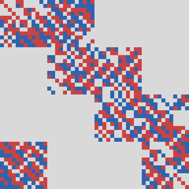
F.3 The anomaly vanishes
Notation: \(\widetilde{SH}{}^3(BG)\) is GJF's extended supercohomology (Majorana, Gu–Wen and bosonic layers), the home of the anomaly \(\alpha(V,G)\) of a \(G\)-action on a holomorphic SVOA (GJF Thm 4.2). Authoritative write-up of the gauging lemma: notes/gauging_lemma.pdf (tex); the running anomaly notes with every step labelled: notes/NOTES_q8_anomaly.md; the order-8 obstruction and the quaternion route: notes/NOTES_k8.md.
F.3.1 (Lift). cited
computed The certificate's \(i,j\) satisfy \(i^2=j^2=(ij)^2=-1\), \(ji=-ij\), generate a
group of order 8 and preserve \(C\) (verify.py). By A.4 they lift to an honest
\(Q_8\subset\mathrm{Aut}_{\mathcal N=1}(V)\). Any two homomorphic lifts differ by a cocycle with values in the torus
\(\Lambda\otimes\mathbb R/\Lambda\), and \(H^1(Q_8,\Lambda\otimes\mathbb R/\Lambda)\cong H^2(Q_8,\Lambda)\) (the real
vector space is cohomologically trivial), so they are conjugate once \(H^2(Q_8,\Lambda)=0\)
proved: (i) a finite group's cohomology in positive degrees is killed by \(|Q_8|=8\), so
\(H^2(Q_8,\Lambda)=H^2(Q_8,\Lambda\otimes\mathbb Z_2)\) (2-adic integers); (ii) \(\Lambda\) contains the frame lattice
\(\sqrt3\,\mathbb Z^n\) with index \(3^{n/2}\), a 2-adic unit, so \(\Lambda\otimes\mathbb Z_2\cong\mathbb Z_2^n\) with the
signed-permutation action, i.e. \(m\) copies of \(L\otimes\mathbb Z_2\) (\(m=24\) at \(k=8\), \(48\) at \(k=16\)), where
\(L=\mathbb Z[Q_8]\otimes_{\mathbb Z[\langle-1\rangle]}\mathbb Z^{\rm sgn}\) is the signed 4-block (rank 4, induced from the
sign character of the centre); (iii) by Shapiro's lemma
\(H^2(Q_8,L\otimes\mathbb Z_2)\cong H^2(C_2,\mathbb Z_2^{\rm sgn})=0\), since \(H^n(C_2,\mathbb Z^{\rm sgn})\) is \(\mathbb Z/2\) for
odd \(n\) and \(0\) for even \(n\). (notes/NOTES_q8_anomaly.md §S3.3.)
F.3.2 (Majorana layer). proved from GJF Ex. 4.4: the layer vanishes iff \(\langle\chi,(1-g)\chi\rangle\in4\mathbb Z\), \(\chi=\sqrt3(1,\dots,1)\). For \(g=-1\): \(2\chi^2=6n\); for \(g=i,j,k\) (only negative 2-cycles): \(\chi^2=3n\). Both lie in \(4\mathbb Z\) for \(n=96,192\). So every element acts evenly on the Ramond sector.
F.3.3 (Anomaly group). cited \(\widetilde{SH}{}^3(BQ_8)\cong\mathrm{Hom}(\Omega^{\rm Spin}_3(BQ_8),U(1))\) and \(\Omega^{\rm Spin}_3(BQ_8)\cong\mathbb Z_8\oplus\mathbb Z_4\oplus\mathbb Z_4\): Davighi–Gripaios–Lohitsiri, arXiv:2207.10700 (JHEP 09 (2022) 147), Table 6; agrees with Bayen–Bruner (Trans. AMS 348 (1996)) and Botvinnik–Gilkey (1995) for \(ko_3(BQ_8)\) (these two not re-checked). The exponent is 8. The bosonic layer \(H^3(Q_8,U(1))\cong\mathbb Z_8\) restricts surjectively to each \(\mathbb Z_4\), and the joint kernel of all restrictions to cyclic subgroups is \(\{0,4e\}\) proved. By Yu (arXiv:2105.02231, Prop. 1.1, 3.3, 3.4) this class is invisible to all genus-one data cited: no computation of twisted–twined characters can decide the question.
F.3.4 (The free-fermion end point). computed
proved In each block, right multiplication by \(u=1+i+j\) (norm 3) commutes with the
left \(Q_8\) action, so \(F=L^m\cdot u\cong\sqrt3\,\mathbb Z^{4m}\) (\(L\) the Lipschitz quaternions) is a \(Q_8\)-stable
3-frame of \(\mathbb Z^{4m}\), and \(\mathbb Z^{4m}=\Lambda(C')\) with \(C'=\mathrm{tetracode}^{\oplus m}\), on which
\(Q_8\) acts by the same signed permutations as on the certificate code. Hence
\(V_{\Lambda(C')}=V_{\mathbb Z^{4m}}=\mathrm{Fer}(8m)\) with the blockwise \(Q_8\). (\(m=24\) for \(k=8\), \(48\) for \(k=16\);
checked exactly for \(m=24\) by code/neighbour_chain.py.)
F.3.5 (Equivariant neighbour chain). proved
computed for \(k=8\) For a \(Q_8\)-stable totally isotropic \(U\) and a
\(Q_8\)-invariant self-dual \(C_i\), \(C_{i+1}=(C_i\cap U^\perp)+U\) is \(Q_8\)-invariant and self-dual (modular law).
With \(U=U_b\) the tetracode of block \(b\) (an irreducible \(Q_8\)-module), either \(U_b\subset C_i\) or
\(U_b\cap C_i=0\), and in the second case \(\dim(C_{i+1}\cap C')\ge\dim(C_i\cap C')+2\). So at most \(m\) steps lead from
any such code to \(C'\). For the \(k=8\) certificate: 23 steps (blocks 0–22; block 23 already contained),
\(\dim(C_i\cap C')=2,4,\dots,48\); replayed independently by Codex (docs/auditor_remaining_review_2026_10_18.json,
workspace, not published). For \(k=16\) the chain exists by the general argument; it was not computed.
F.3.6 (Each step is a \(\mathbb Z_3^2\) orbifold with inflated anomaly). proved \(E=(C_i+U_b)/C_i\cong\mathbb Z_3^2\) acts on \(V=V_{\Lambda(C_i)}\) through GJF's torus \(C_i^*\subset\mathrm{Aut}_{\mathcal N=1}(V)\) (GJF Thm 3.1); \(V^E=V_{\Lambda(C_i\cap U_b^\perp)}=V\cap V'\). The lift \(\hat Q_8\) normalises \(E\) with trivial intersection, so \(H=E\rtimes Q_8\) (order 72) acts. \(E\) is non-anomalous and \(V'=V_{\Lambda(C_{i+1})}=V/\!\!/_\psi E\) for one of the three classes \(\psi\in H^2(E,U(1))\cong\mathbb Z_3\) (standard extension/algebra-object dictionary; gauging_lemma.tex §8, (A1)–(A2)). Coprime splitting (gauging_lemma.tex Prop. 2.3): \[(s^*,\mathrm{res}_E):\widetilde{SH}{}^3(BH)\to\widetilde{SH}{}^3(BQ_8)\oplus H^3(E;U(1))^{Q_8}\] is an isomorphism (prime by prime, Lyndon–Hochschild–Serre), so \(\alpha(V,H)=\pi^*\alpha(V,Q_8)\). (GJF state the degree-3 inclusion \(H^3\hookrightarrow\widetilde{SH}{}^3\) just before Thm 4.2, which also gives this; the \(p\)-local proof is an alternative.) \(Q_8\) acts on \(E\) through \(\mathrm{SL}(2,3)\), so it fixes each \(\psi_k(a,b)=\zeta^{k\det(a,b)}\) on the nose (Lemma 3.3 there).
F.3.7 (Gauging lemma). proved, modulo cited theorems
Let \(V\) be a holomorphic SVOA, \(H=E\rtimes Q\subset\mathrm{Aut}(V)\) finite solvable, and assume:
(0) \(E\) abelian of odd order, \(\gcd(|E|,|Q|)=1\); (1) \(E\) non-anomalous; (2) \(\alpha(V,H)=\pi^*\alpha\),
\(\alpha\in\widetilde{SH}{}^3(BQ)\); (3) \([\psi]\in H^2(E;U(1))\) fixed by \(Q\); (4) the Majorana layer \(m(V,Q)=0\);
(P) \((-1)^F\notin H\); (R) \(V_0\) regular and the twisted sectors of \(V'=V/\!\!/_\psi E\) other than \(V^E\) have positive
weights. Then the \(H\)-action on \(V^E\) extends to \(K\subset\mathrm{Aut}(V')\), a split extension
\(1\to\hat E\to K\to Q\to1\) whose complements are all \(\hat E\)-conjugate, \((V')^K=V^H\), and every complement
\(Q'\) has \(\alpha(V',Q')=\alpha\). (gauging_lemma.tex Thm 1.1; Theorem GQ is Thm 2.1 there.) In the application all hypotheses hold: (1), (2) by F.3.6;
(3) by the \(\mathrm{SL}(2,3)\) lemma; (4) by F.3.2; (P) because \(H\) fixes the odd supercurrent; (R) because \(V_0\),
\(V'_0\) are positive-definite even lattice VOAs. Every complement is a homomorphic lift of the monomial \(Q_8\), hence
conjugate to GJF's lift (F.3.1).
Structure of the proof. (i) GJF's category of twisted modules \(\mathcal F(V,G)\) is defined through
Kirillov's algebra-object construction over \(\mathrm{Rep}(V^G)\) (GJF's proof of Thm 4.2 refers to Kirillov 2002);
Theorem GQ identifies it, as a \(G\)-graded monoidal supercategory with equal associators, with the \(G\)-graded part of
McRae's crossed category, after adjoining fermion parity so that McRae's theorem applies over the bosonic base
\((V^H)_0\). (ii) Inflation: \(\mathcal F(V,H)\simeq\pi^*\mathcal F(V,Q)\). (iii) \(A_\psi=\bigoplus_e1_e\) is an algebra on
which \(Q\) acts (invariant cocycle by coprimality). (iv) Induction is a fully faithful, layer-preserving monoidal
functor into \(A_\psi\)-bimodules; there are \(|E|\) simple bimodules per coset (the dual \(\hat E\) sectors).
(v) Bimodule dictionary: the twisted modules of \(V'\) are exactly these bimodules (a centrality computation: a
charge-\(\chi\) vector commutes with the flux \(N_e\) only up to \(\chi(e)\)). (vi) Schur–Zassenhaus for the complement.
The layers (Majorana, Gu–Wen, bosonic) are carried along unchanged.
F.3.8 (Conclusion). proved, modulo cited theorems \[\alpha(V_{\Lambda(C)},Q_8)=\alpha(V_{\mathbb Z^{4m}},Q_8)=\alpha(\mathrm{Fer}(8m),Q_8)=m\,\alpha(\mathrm{Fer}(8),Q_8)\] by additivity under \(\otimes\) with the diagonal action, and \(m\,\alpha=0\) because \(8\mid m\) and the anomaly group has exponent 8. Hence the \(Q_8\) actions at \(k=8\) (\(m=24\)) and \(k=16\) (\(m=48\)) are non-anomalous, and \(\mathcal I(V/\!\!/Q_8)=\pm3\). Earlier, superseded version: a Narain-deformation argument (same genus of the \(Q_8\)-lattices \(\Lambda(C)\oplus(-\mathbb Z^{96})\) and \(\mathbb Z^{96}\oplus(-\mathbb Z^{96})\), strong approximation) that needed the physics assumption that anomalies are constant along connected symmetric families; the chain removes it.
F.3.9 (What is cited).
cited GJF Thm 3.1, Thm 4.2 (and its proof via Kirillov), Ex. 4.4; Kirillov,
CMP 229 (2002) (Def. 4.1, Thms 4.3, 4.7, eq. (5.3)); McRae, arXiv:1910.13226 (Def. 2.3, Thms 2.10, 4.15, 4.17; Lemma 4.18);
Creutzig–Kanade–McRae, arXiv:1705.05017 (Def. 2.11, Props. 2.17–2.47, Thms 2.20, 2.52, 2.53, 2.55, 2.59, 3.42,
3.65); Huang–Kirillov–Lepowsky, arXiv:1406.3420 (Thms 3.2, 3.4, 3.5); Creutzig–Kanade–Linshaw,
arXiv:1511.08754 (Thms 3.13, 3.14); Carnahan–Miyamoto, arXiv:1603.05645 (Main Thm); Huang, Commun. Contemp. Math. 10
(2008) (rigidity, modularity); Dong–Jiao–Xu, arXiv:1201.2738 (general case only; replaced by lattice simple
currents in the application); Davydov–Müger–Nikshych–Ostrik §3.6; Schauenburg (2001); X. Lin,
arXiv:2107.09400 (Thms 3.10, 3.11; regularity in the general case only); Davighi–Gripaios–Lohitsiri (F.3.3); Yu
(F.3.3). Theorem numbers were checked against the arXiv texts during the anomaly work, except where gauging_lemma.tex marks
them [C°] (Galois correspondence, lattice fusion, Lin). Review: three rounds by the Codex team
(docs/gauging_lemma_*review*.md, workspace, not published); every point was addressed. Codex's last assessment: the
categorical route is appropriate and McRae's Remark 4.16 is not an obstruction; it is “not an independent
verification of every cited theorem”.
G. Every \(k\): constructions, certificates, verification
G.1 (Uniform verification). computed
code/verify.py checks every certificates/kNN_*.json from the generator alone: self-duality
of the generator matrix \(R=(1|A)\) (\(RR^T=0\), rank \(n/2\)); the stored rowspace hash (SHA-256 of the reduced row echelon
form; distinct hashes are distinct codes); index and number of full-support words by the banded transfer DP (trace of a
product of transfer matrices built from the blocks of \(A\); the cell partition is a hint whose zero pattern is checked,
so a wrong hint fails rather than misleads; exact by Chinese remaindering, bound \(3^r2^{n/2}\)); the symmetry generators
preserve \(C\) (the image of every row of \(R\) is orthogonal to all rows of \(R\), which suffices because \(C\) is self-dual); order, cycle type, \(g^{m/2}=-1\); the fixed subcode of
\(h=g^{m/3}\), contracted to one coordinate per 3-cycle, with its signed count (brute force when its dimension is \(\le24\),
banded DP otherwise); for \(Q_8\) the relations, group order, cyclicity of commuting pairs and \(-1\in\langle x\rangle\).
Self-test: on random small chains with nonzero indices the DP agrees with brute force. The run ends with the index
arithmetic of the rows without a code and the sector-by-sector \(D_4\) sum of E.3. Output:
verify_output.txt. The report keeps apart what the machine checks prove and what they do not:
finite_checks_pass (all of the above, exact finite facts about the code and its symmetry; 17 of 17); the basis of
the orbifold index, which is GJF Thm 5.6 (cited, its finite hypotheses checked) for the 11 cyclic rows,
orbifold_index_conditional_on_anomaly_lemma for the 3 \(Q_8\) rows (the non-anomaly argument of §F.3, which no
finite check replaces), and no orbifold for the 3 rows with \(m=1\); and the rows without a code, which are cited
constructions plus index arithmetic. The modular matrix products assert their int64 bound (inner dimension
\(\times(p-1)^2<2^{63}\)) and reject inputs that would overflow.
| \(k\) | certificate | construction (cell structure as in the paper's Tables 1–2) | index | symmetry (checked) | fixed words of \(h\) (even/odd) | orbifold | found / cross-checked |
|---|---|---|---|---|---|---|---|
| 6 | k06_claude_canonical | \((12,3)^3\): anti-periodic chain, one cell \(\times3\), \(r=3\) | −24 | \(\mathbb Z_6\), \(g^3=-1\), \(h\): \(3^{24}\) | 40/40 | −4 | Claude / Codex |
| 7 | k07_codex | \(3\times(12,3)+(6,3)\): periodic chain (12,12,12,6), \(r=3\) | 24 | none (\(m=1\)) | – | 24 | Codex / verify.py |
| 8 | k08_claude_q8 | \(4\times(12,4)\): anti-periodic chain of 4 \(Q_8\)-cells, \(r=4\) | 24 | \(Q_8\), \(i\): \(2^{48}\) (negative) | none (\(-1\) a power) | 3 | Claude / Codex |
| 9 | k09_claude | \((18,5)^3\): anti-periodic chain, one width-18 cell \(\times3\), \(r=5\) | 24 | \(\mathbb Z_3\): \(3^{36}\) | 280/280 | 8 | Claude / Codex |
| 9 | k09_codex | \([(8,3)+(10,3)]^3\): a period of two cells of widths 8 and 10, repeated three times, \(r=3\) | 24 | \(\mathbb Z_3\): \(3^{36}\) | 216/216 | 8 | Codex / Claude |
| 10 | k10_claude | \((12,4)^5\): periodic chain, one HP cell \(\times5\), \(r=4\) | −24 | \(g=-1\) | – | −12 | Claude / Codex |
| 10 | k10_codex | \(5\times(12,3)\): periodic chain of 5 cells, \(r=3\) | 24 | \(g=-1\) | – | 12 | Codex / Claude |
| 11 | k11_codex | \(5\times(12,3)+(6,3)\), \(r=3\) | 24 | none | – | 24 | Codex / Claude |
| 13 | k13_claude | \(6\times(12,3)+(6,3)\): periodic chain, \(r=3\) | 24 | none | – | 24 | Claude / Codex |
| 14 | k14_claude | \(7\times(12,3)\): periodic chain of 7 different 12-cells, \(r=3\) | −24 | \(g=-1\) | – | −12 | Claude / Codex |
| 15 | k15_claude | \([2\times(12,3)+(6,3)]^3\): anti-periodic, \(r=3\) | −24 | \(\mathbb Z_3\): \(3^{60}\) | 9,280/9,280 | −8 | Claude / Codex |
| 16 | k16_claude_antiperiodic, _periodic | \(8\times(12,4)\): chains of 8 \(Q_8\)-cells, \(r=4\) | −24 | \(Q_8\), \(i\): \(2^{96}\) | none | −3 | Claude / verify.py |
| 18 | k18_codex | \([3\times(12,4)]^3\): periodic, \(r=4\) | 24 | \(\mathbb Z_6\), \(g^3=-1\), \(h\): \(3^{72}\) | 42,352/42,352 | 4 | Codex / Claude |
| 21 | k21_claude_antiperiodic, _periodic | \([3\times(12,4)+(6,4)]^3\), \(r=4\), disc. 2 | −24 | \(\mathbb Z_3\): \(3^{84}\) | 239,744 and 240,080 (balanced) | −8 | Claude / Codex |
| 21 | k21_codex | periodic, \([3\times(12,4)+(6,4)]^3\), \(r=4\), disc. 2 | 24 | \(\mathbb Z_3\): \(3^{84}\) | 229,912/229,912 | 8 | Codex / Claude |
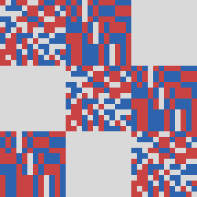
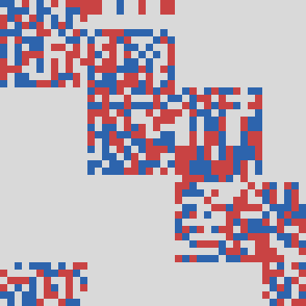
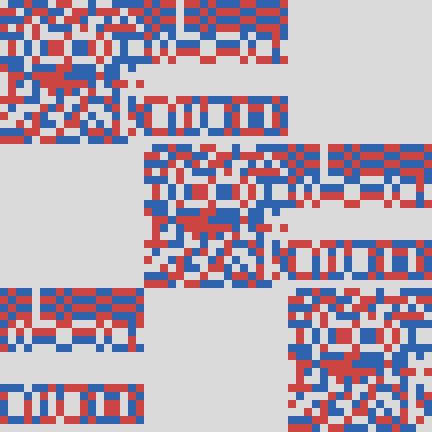
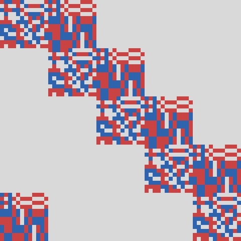
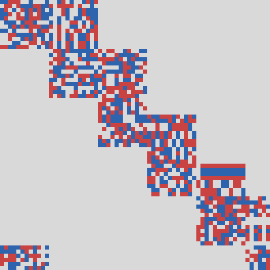
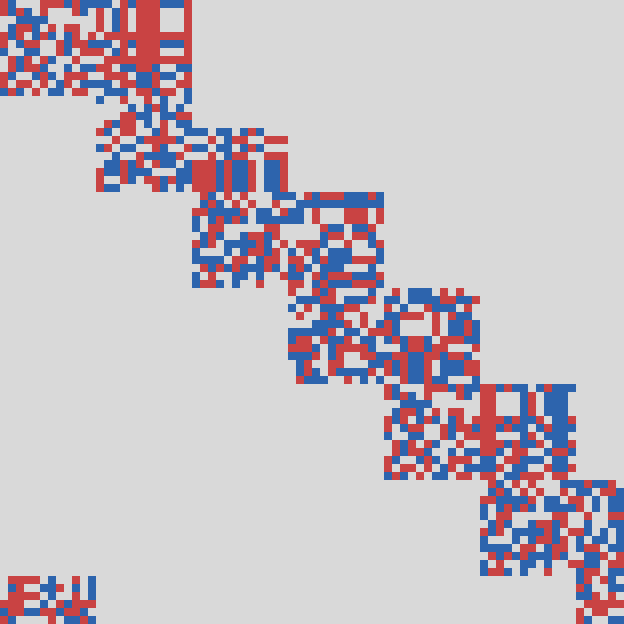
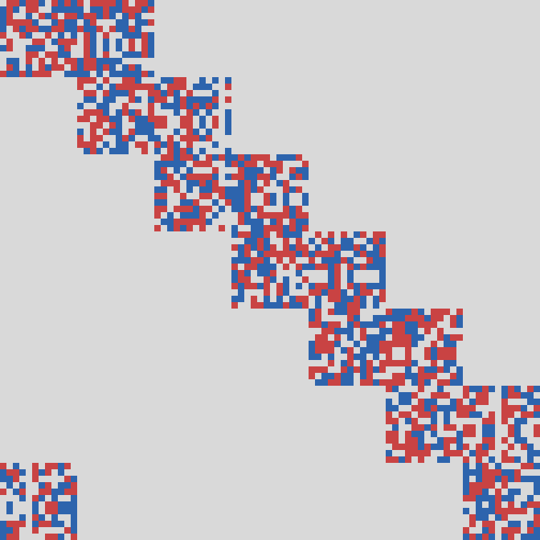
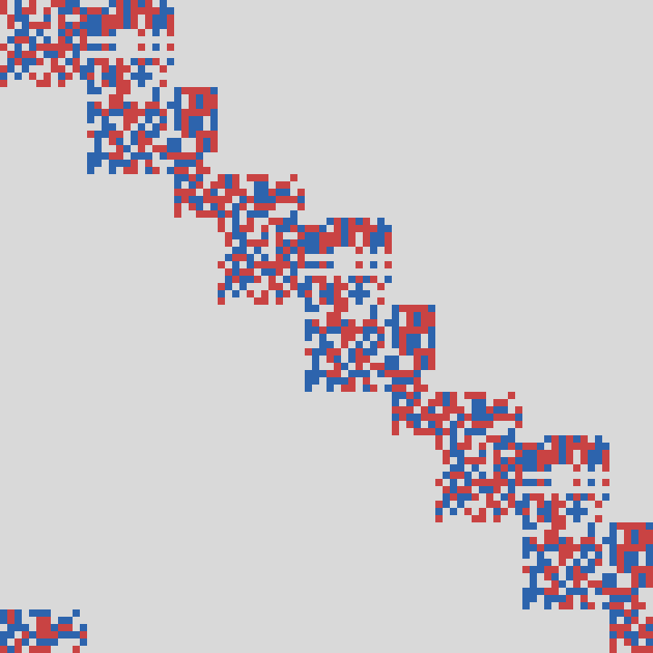
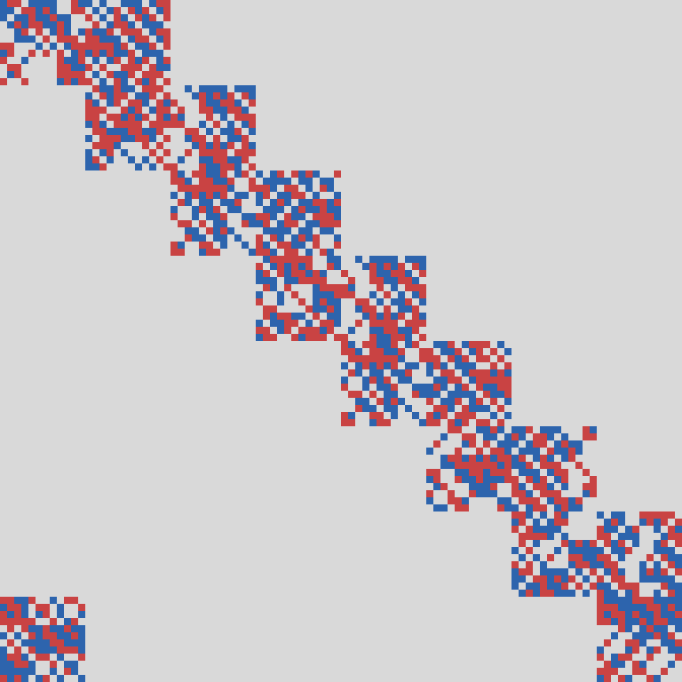
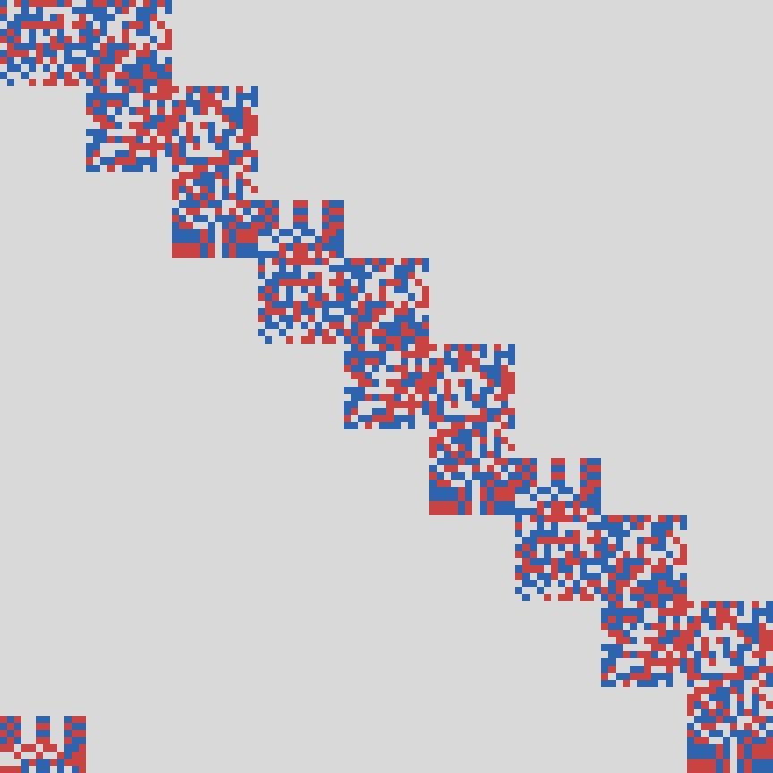
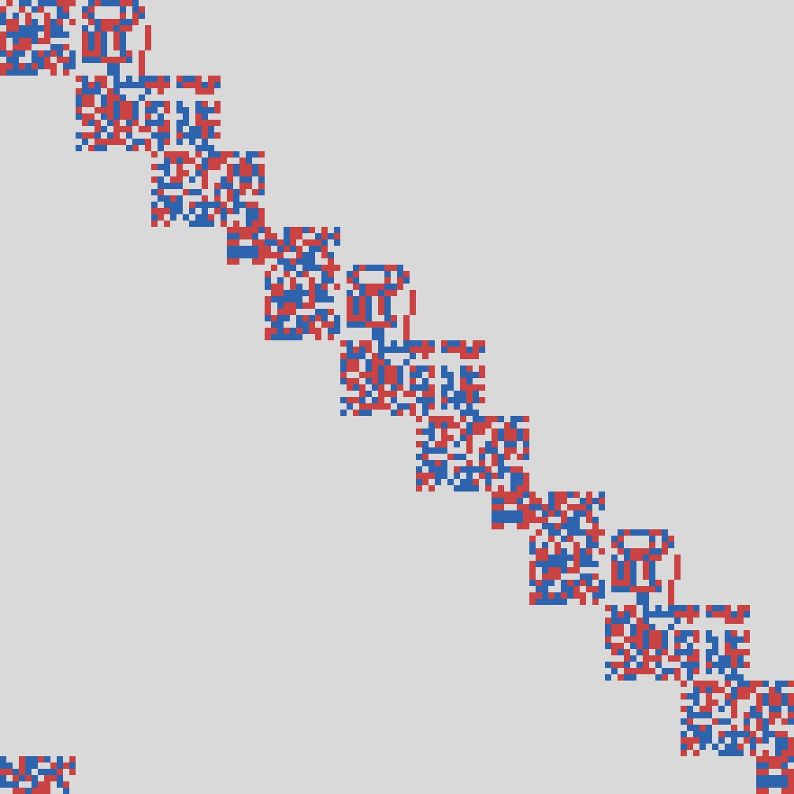
The matrix \(A\) of the systematic generator \(R=(I\,|\,A)\) of one certificate per \(k\) (the one linked under each diagram, coordinate order as in the certificate; size \(6k\times6k\)); each square is one entry: grey 0, red \(+1\), blue \(-1\). Representatives, not canonical forms under code equivalence; each diagram is checked entry by entry against its certificate. Diagram from the exact matrix by the Codex team (GPT-6 Astra).
G.2 (Remarks per row). Cell structures: \((a,b)\) is a cell of width \(a\) with \(b\) boundary spins, \(\times\) and \(+\) join independently chosen cells, an exponent repeats the period (the paper's notation). \(k=6\): the paper's seed; \(T\) and the chain to \(T''\) are in the paper. \(k=10,14\): \(m=2\) and \(g=-1\) is an automorphism of every linear code, so only the index matters. \(k=7,11,13\): \(m=1\), the lattice SCFT itself is minimal. \(k=15\): the raw certificate lists three hits; they are identical (same cells, same generator), the sampler having re-tested one candidate three times; that certificate is one code (the paper's Table 1 counts all 53 distinct \(k=15\) codes found later). \(k=21\): the two Claude codes are the anti-periodic and periodic chains of one candidate; Codex's code is independent. \(k=18\): found after \(1.34\cdot10^7\) rank-4 candidates, about 5.5 CPU-hours. The fixed-word counts in the table were computed here by verify.py; where the original certificates give them (\(k=6,9,15\)) they agree. Rows without a code (\(k=12,17,19,20,22,23,24\) and \(k>24\)) follow from the index arithmetic printed at the end of verify_output.txt: \(\mathcal I\) is multiplicative, \(\mathrm{Sym}^2\) acts by \(\mathcal I\mapsto\mathcal I(\mathcal I\pm3)/2\), and \(T_3\) (\(c=36\), index 8) is GJF's.
G.3 (Inequivalence). computed Among the 8,748 \(k=6\) codes of the paper's Table 1 (C.2), the complete characters distinguish at least 4,579 inequivalent seed theories \(T=V_{\Lambda(C)}/\!\!/\mathbb Z_6\), and as many double symmetric squares \(T'\), \(T''\); the low-weight NS spectra alone distinguish 4,563. The second count uses the NS dimensions up to weight \(\tfrac52\), i.e. the polynomial \(P_T\) below without its constant term; in the paper's terms (§4.3, footnote), the terms of \(Z^{\rm NS}\) from \(q^{-3}\) through \(q^{-1/2}\) distinguish 4,563 of the 4,579 characters. These come from the untwisted sector alone, since every nontrivial twisted sector starts above weight \(\tfrac52\) (ground energies \(8/3\), \(19/6\), \(9/2\), the same for every code, as \(g\) has the same type), so they use only the untwisted lattice projection and the lift of \(g^2\) on NS momentum states. The complete characters also use the lift on the Ramond ground states and the twisted sectors of the standard orbifold construction (H.1). The 16 pairs that only the constant term \(a_0=n\) separates (their polynomials agree except in \(a_0\)) have \(a_0=\) \(14{,}116\), \(14{,}196\); \(14{,}276\), \(14{,}532\); \(14{,}676\), \(14{,}748\); \(14{,}732\), \(14{,}852\); \(15{,}068\), \(15{,}124\); \(15{,}548\), \(15{,}620\); \(16{,}052\), \(16{,}100\); \(16{,}236\), \(16{,}324\); \(18{,}028\), \(18{,}124\); \(18{,}268\), \(18{,}340\); \(18{,}324\), \(18{,}620\); \(19{,}924\), \(19{,}988\); \(20{,}004\), \(20{,}132\); \(22{,}156\), \(22{,}356\); \(22{,}948\), \(22{,}980\); \(24{,}588\), \(24{,}628\). These are pairs of characters, not of equivalent codes. Census subset. The frozen 7,112-seed census dataset (C.2) has its own counts: 2,961 complete characters, 2,958 through weight \(\tfrac52\) (three pairs: \(a_0=15{,}548\) and \(15{,}620\), \(14{,}676\) and \(14{,}748\), \(18{,}268\) and \(18{,}340\)). The invariants of \(T\) in the table, computed for every code, take 4,579 distinct values on the 8,748 codes, and codes with different values give inequivalent theories.
| invariant of \(T\) | from the code \(C\) |
|---|---|
| Ramond ground states (\(L_0=3\)): \(n=n_++n_-\). 1,457 values (census subset 1,038) | \(n=(N+8F)/6\), \(n_+-n_-=I/6=\pm4\) |
| states at the first excited Ramond level (\(L_0=4\)): \(D_1\). With \(n\): 4,579 values (2,961) | \(D_1=(144N+8A_{69})/6\) \(+\,X(\bar C)+864{,}288{,}768\) |
| weight-1 fields: \(\dim T_1\), between 0 and 16 (2,701 codes have \(\dim T_1>0\)). With \(n\) and \(D_1\): still 4,579 | \(\dim T_1=A_6/6\) |
| full NS and Ramond characters: \(Z_T=P_T(t)\), degree 6 in \(t\). Still 4,579 polynomials (2,961) | \(a_4,\dots,a_1\) from \(A_6,A_9,A_{12},A_{15}\); \(a_0=n\), \(a_1=-D_1/4096\) |
Here \(N\) is the number of full-support codewords of \(C\), \(F\) the number of those fixed by \(g^2\) (the
full-support words of the contracted fixed code \(\bar C\)), \(I=\mathrm{Index}(C)\), \(A_{69}\) and \(A_6\) the numbers
of codewords with exactly three zeros and of weight 6, and \(X(\bar C)\) the \(q^1\) coefficient of
\(\Theta_{L^*+\chi_L/2}/\Delta(\tau/3)\), computed from the weight enumerator of \(\bar C\) (three values occur, the same in
the census and in the added codes). For every census seed \(N\) and \(F\) are computed twice, from the cell's transfer
tables and from the length-72 generator, and \(A_{69}\), \(A_6\) by transfer DPs over the generator truncated at three zeros
and at weight 6 (the first also returns \(N\), which agrees). The 1,636 added codes are computed from their generators by
code/census_general/k6_general.py, which reproduces census polynomials and the paper's seed. The paper's seed has
\(n=6{,}968+6{,}972\) and \(D_1=2{,}579{,}935{,}232=4096\cdot629{,}867\), as in H.3 and H.4.
Symmetry. The census seeds and the 809 anti-periodic added codes use the signed shift \(g\) of the anti-periodic
chain; the 827 periodic added codes use \(g=-\)shift. Both are products of 24 signed 3-cycles with sign product \(-1\) and
\(g^3=-1\). Both conventions have the same signed cycle type, hence the same oscillator factors and oscillator
vacuum-energy shifts; fixed-momentum contributions are computed from each code's contracted fixed subcode using the same
formulas. Checked for every code: \(g\) preserves \(C\) and \(g^3=-1\); the \(g^2\)-fixed
subcode has dimension 12 and its contraction \(\bar C\) is self-dual; its full-support words are balanced; \(\bar C\) has no
words of weight 1, 2, 4, 5 (no vectors of norm 1, 2, 4, 5 in \(L=\Lambda^{g^2}\)); \(D_1=-4096\,a_1\); all derived dimensions
are non-negative. These are finite checks of the hypotheses of the formulas; the lift and twisted-sector inputs are those
of H.1.
Derivation, sector by sector, with the inputs of H.1 (docstrings of code/census/fc_seed_census.py and
fc_seed_level1.py; for the paper's seed notes/field_content.md §3.2
and §6.4): the untwisted sector gives \((N+2F)/6\) Ramond ground states (the trace of \(\hat g^j\) on them is 0 for
odd \(j\) and \(F\) for \(j=2,4\), by A1), the \(g^2\)- and \(g^4\)-twisted sectors \(F/2\) each, and the \(g\),
\(g^3\), \(g^5\) sectors none (ground energies \(19/6\) and \(9/2\)). At \(L_0=4\) the untwisted sector gives
\((144N+8A_{69})/6\), the \(g^{\pm2}\) sectors \(X(\bar C)\), the \(g^{\pm1}\) sectors 864,288,768, the same for every
code since they have no fixed momenta, and the \(g^3\) sector nothing. Cells related by the symmetries of C.1,
\((Q,S,R)\sim(UQM_\sigma,S,\sigma R)\), give codes related by a monomial map that commutes with \(g\), hence isomorphic
theories; the invariants are constant on each of the 6,390 classes of the 7,112 census seeds.
The full characters. For every code the NS character is a polynomial of degree 6 in \(t=(\vartheta_3/\eta)^{12}\) (H.4): \(Z_T=\mathrm{Tr}_{\rm NS}\,q^{L_0-3}=P_T(t)=\sum_ja_jt^j\). The same coefficients give the NS character with \((-1)^F\) inserted, \(\sum_j(-1)^ja_j(\vartheta_4/\eta)^{12j}\), and the Ramond character, \(\sum_j(-1)^ja_j(\vartheta_2/\eta)^{12j}\). Always \(a_6=1\) and \(a_5=-144\); \(a_4,\dots,a_1\) follow from \(\dim T_1\), \(T_{3/2}\), \(T_2\), \(T_{5/2}\), which the weight counts \(A_6,A_9,A_{12},A_{15}\) (and \(A_3(\bar C)\)) give, and \(a_0=n\). Checked for every code: the expansion reproduces these dimensions, and \(-4096\,a_1\) equals the separately computed \(D_1\), a test of the whole orbifold computation. The paper's seed gives \(t^6-144t^5+6984t^4\) \(-129679t^3+751404t^2\) \(-629867t+13940\) (H.4). All 8,748 polynomials are in data/k6_union/k6_union_polynomials.csv (the census subset also in data/k6_seed_census/). There are 4,579 distinct ones (4,563 without the constant term; \(a_4\), \(a_3\), \(a_2\), \(a_1\), \(a_0\) take 15, 496, 3,299, 4,234 and 1,457 values), and they split the codes exactly as \((n,D_1)\) does; the 1,636 added codes give 1,618 polynomials, none of them a census one (census subset: 2,961; 2,958; 8, 312, 2,273, 2,793, 1,038). So the characters are exhausted: every NS weight space and Ramond level is fixed by the polynomial, and no further level can raise the bound.
From \(T\) to \(T'\) and \(T''\). proved Different polynomials \(P_T\) mean different NS weight spaces of \(T\) up to weight 3, since these fix \(P_T\); different \((n,D_1)\) already mean different \(P_T\). Up to weight 3 the NS weight spaces of \(\mathrm{Sym}^2X\) are those of the untwisted, swap-invariant part \(\tfrac12[Z_X(\tau)^2+\tilde Z_X(2\tau)]\) of the formula in H.4 (the swap-twisted sectors start at weights 6 and 12, H.3). With \(d_j\) the dimension of the weight-\(j/2\) space of \(X\) (\(d_0=1\)), its coefficient at weight \(m/2\) is \[e_m=\tfrac12\Bigl[\sum_{i=0}^{m}d_id_{m-i}+\mathbf 1_{2\mid m}(-1)^{m/2}d_{m/2}\Bigr],\] which for \(m>0\) is \(d_m\) plus a polynomial in \(d_1,\dots,d_{m-1}\) (e.g. \(968{,}772=962{,}444+(113^2-113)/2\) at weight 3, H.3). The map is triangular, hence injective: these weight spaces of \(\mathrm{Sym}^2X\) determine those of \(X\), and the same holds for the dimensions up to weight \(\tfrac52\) used in the first count. (As in the paper, \(T\) is first normalised to index \(-4\) by an Arf twist if needed, which changes no NS dimension.) Tensoring with Arf changes no NS weight space. Hence seeds with different values give inequivalent \(T'\) and inequivalent \(T''\). Computed as well: the 4,579 polynomials give 4,579 different lists of NS dimensions of \(T''\) up to weight 3, and 4,563 through weight \(\tfrac52\) (the degree-24 polynomials of \(T''\) are not written out). For \(T''\) the number of Ramond ground states alone increases strictly with \(n\).
Census subset: Hadamard–Paley and reflection seeds. Since related cells give isomorphic theories, the 1,078 Hadamard–Paley seeds (358 classes, C.2) give at least 286 and at most 358 inequivalent theories, and the 946 seeds of the exhaustive part (298 classes) at least 258. The 6,034 reflection seeds lie in 6,032 classes, none shared with the Hadamard–Paley census, and take 2,675 values. These statements concern the census families only.
open The exact number of inequivalent theories among the 8,748 codes: at least 4,579, and at most 8,026 = 6,390 census classes + 1,636 added codes (no symmetry classification of the added codes was made; 8,748 is the trivial bound); for the census subset between 2,961 and 6,390. Characters cannot raise the bound (above), and equal characters do not imply isomorphic theories. A next invariant is the Lie algebra on \(T_1\), nonzero for 2,701 codes (1,678 census seeds) with \(\dim T_1\) up to 16; it has not been computed. Beyond these codes we do not claim that different certificates at the same \(k\) (G.1) give inequivalent theories. Code: code/census/ (census) and code/census_general/ (any generator); data: data/k6_union/ (all 8,748) and data/k6_seed_census/ (census subset).
H. Field content of \(T\), \(T'\), \(T''\)
Here \(V=V_{\Lambda(C)}\) for the \(k=6\) certificate, \(T=V/\!\!/\mathbb Z_6\), \(T'=\mathrm{Sym}^2T\),
\(T''=\mathrm{Sym}^2(T'\otimes\mathrm{Arf})\) (called \(P\) in the workspace notes and in the output of the scripts). The paper's
§4.3 (“States and fields”) states the main results; this section gives the inputs and the remaining numbers. Full write-up:
notes/field_content.md. Scripts: code/fc_weight_enum.py, fc_characters.py,
fc_theta.py, fc_sym2.py, fc_closed_form.py (each a few seconds, exact).
H.1 (Inputs). cited
The characters are those of the standard orbifold construction of GJF; the two places where lift phases enter are made
explicit here. A1: the lift \(\hat g^2\) of the order-3 element \(g^2\) acts trivially on \(e^v\) for \(v\) in the
\(g^2\)-fixed lattice \(L=\Lambda^{g^2}\) and on the \(g^2\)-fixed Ramond ground states. These are the only lift phases the
computation uses, in the traces \(Z^{(0,2)}\) and \(Z^{(0,4)}\) (code/fc_characters.py); \(\hat g\) itself is not
trivial there, since \(g^3=-1\) gives \(gv=-v\) for every \(g^2\)-fixed \(v\) (e.g. \(v=(x,-x,x)\) on the three cells), and
\(g\) fixes no nonzero momentum. proved, given GJF Thm 3.1 for the momentum states: the lift
lies in \(\hat\Lambda[2].\mathrm{Aut}(C)\), so \(\hat g^2\) multiplies each \(e^v\), \(v\in L\), by a sign, and \(\hat g^2\) has
order 3, so the sign is \(+1\). cited for the Ramond ground states: in the proof of their
Thm 5.6, GJF note that for an element of odd order there is no sign ambiguity when lifting its action, and that its action
on the Ramond-sector ground states lifts the permutation action on the maximal (full-support) codewords; for
\(h=g^2\), of order 3, this is A1 on the fixed ground states. Separately, \(\hat g^3\) is the standard lift
of \(-1\) (GJF Thm 3.1/5.6). A2: the
\(\mathbb Z_6\) action on twisted sectors is the one of the anomaly-free orbifold construction (GJF §4, Thm 5.6),
fixed by modular covariance without extra phases; the choice of anomaly trivialisation (spin refinement) is part of the
definition of the orbifold, and the one choice that could matter here changes no character (below). checked Consistency checks that would most likely fail
for a wrong phase all pass: \(Z^{(0,2)}_{PP}\equiv0\) (twined Witten index \(40-40\)), level matching in all twisted sectors,
independence of the choice of \(\gamma\in SL_2(\mathbb Z)\), integrality and non-negativity of all projections,
spin–statistics. The Kitaev refinement of \(\mathbb Z_2\subset\mathbb Z_6\) multiplies only identically vanishing
functions, so it changes no character.
H.2 (Seed code). computed Minimum distance 9: \(A_9=534\), \(A_{12}=7{,}506\), \(A_{72}=83{,}000\) (signed \(-24\)); MacWilliams identity verified. \(\dim V_1=72\), \(\dim V_{3/2}=678=144+534\), \(\dim V_2=15{,}012\). The contracted \(g^2\)-fixed code has minimum distance 6 and signed count 0.
H.3 (Graded dimensions and Ramond ground states). computed (inputs of H.1) NS sector of the paper's seed, weights \(0,\tfrac12,1,\tfrac32,2,\tfrac52,3\): \(T\): \(1,0,0,113,2928,42001,962444\); \(T'\): same up to weight \(\tfrac52\), then \(968772\); \(T''\): then \(975100\). Ramond ground states (even/odd): \(T\): \(6968/6972\) (\(13{,}860\) untwisted \(=(83{,}000+2\cdot80)/6\), plus \(40+40\) twisted); \(T'\): \(48{,}587{,}870/48{,}587{,}868\); \(T''\): \(2{,}360{,}781{,}062{,}549{,}029/\ldots030\). NS vacuum unique proved: twisted ground energies \(19/6\), \(8/3\), \(9/2\) for the \(g\), \(g^2\), \(g^3\) sectors; swap-twisted sectors start at weights 6 and 12. No weight-\(\tfrac12\) or weight-1 fields for this seed proved: its code has minimum distance 9 (H.2; \(A_3=A_6=0\)), so \(\Lambda(C)\) has no vectors of norm 1 or 2; \(g\) has no eigenvalue 1 on \(\mathbb R^{72}\), which removes the Heisenberg currents; and all twisted sectors start above weight 1. This is particular to the seed: \(g\) has the same type for every \(k=6\) code, but 2,701 of the 8,748 codes (1,678 of the 7,112 census seeds, up to 7) have \(\dim T_1=A_6/6>0\), up to 16. The dimensions 113, 2,928, 42,001, … above are this seed's; G.3 and data/k6_union/ give every code's. First twist fields at weight 3: \(16+16\) from the \(g^{\pm2}\) sectors (momenta of norm \(2/3\) in the dual of the fixed lattice, matching the 32 weight-6 words of the contracted fixed code).
H.4 (Closed forms). proved (structure, given
modular invariance) computed (coefficients). With the Hauptmodul \(t=(\vartheta_3/\eta)^{12}\),
\[Z_T=t^6-144t^5+6984t^4-129679t^3+751404t^2-629867t+13940;\]
\(Z_{T'}\), \(Z_P\) follow from
\(\tfrac12[Z^2+\tilde Z(2\tau)+Z^R(\tau/2)+\varepsilon\mathcal I]\)-type formulas. Since \(t(1-1/\tau)=-u\),
\(u=(\vartheta_2/\eta)^{12}=4096q\prod(1+q^n)^{24}\), the Ramond partition function is \(Z^R=P(-u)\), e.g.
\[Z^R_T=13940+629867u+751404u^2+129679u^3+6984u^4+144u^5+u^6,\]
all coefficients positive; constant term = number of
Ramond ground states; even/odd parts \(\tfrac12(Z^R\pm\mathcal I)\). The full coefficient lists are written by
fc_closed_form.py. The polynomial \(P_T\) of every \(k=6\) census seed is in
data/k6_seed_census/k6_seed_polynomials.csv (G.3): 2,961 distinct
polynomials, of which the terms from \(q^{-3}\) through \(q^{-1/2}\) already distinguish 2,958; for all 8,748 \(k=6\) codes
of the paper's Table 1 see data/k6_union/k6_union_polynomials.csv: 4,579
distinct polynomials, 4,563 by the same terms.
H.5 (What “in terms of fields” means). \(T''\) has no currents, so no Kac–Moody or free-field symmetry organises it, and no generators-and-relations presentation is available. What is explicit is a lattice-plus-orbifold description: \(T''\) is the \(D_4\ltimes\mathbb Z_6^4\) orbifold of \(V_{\Lambda(C)}^{\otimes4}\) (288 chiral bosons) with the twist of E.3, and below weight 3 its fields are the symmetrised \(\mathbb Z_6^4\)-invariant vertex operators \(:\!P(\partial X)e^{iv\cdot X}\!:\) with \(v\in\Lambda(C)^4\). An explicit operator basis with cocycle factors was not written out.
I. The TMF side: power operations
I.1 (A conditional comparison of characters in Tate K-theory).
cited computed conditional on I.1a and I.1b
In Ganter's equivariant Tate K-theory (math/0701565, Def. 5.10, Thm 5.11,
Rem. 5.15; DMVV as Prop. 6.1) the composite “\(P_2\), then the Thom isomorphism with a \(\Sigma_2\)-equivariant String
Thom class of \(V_w=\mathbb C^w\otimes\rho_2\), then the \(\Sigma_2\)-transfer over commuting pairs” sends a degree-\(2w\)
class \(Z\Delta^k\) (\(w=12k\)) to
\[\tfrac12\bigl[Z(\tau)^2+Z(2\tau)+Z(\tau/2)+Z(\tfrac{\tau+1}2)\bigr]\Delta^{2k},\]
the physics (DMVV) formula. The Euler classes of the sign representation cancel against the \(H_\infty\)-compatible Thom
class \(u(V_w)=P_2(u(\mathbb C^w))\) (Ganter Prop. 5.5 for the untwisted sector, Thm 5.13 for all four; checked here on exact
\(q\)-series in all four sectors for \(k=1,2,6\), code/power_operations_check.py). Conditional on the Thom normalisation in I.1b and on the identification of the second lift with the Arf twist in I.1a,
the character formula reproduces the two symmetric-square index polynomials: on \(f=\mathcal I\Delta^k\) the canonical lift gives
\(\tfrac12(\mathcal I^2+3\mathcal I)\Delta^{2k}\) and the other \(\tfrac12(\mathcal I^2-3\mathcal I)\Delta^{2k}\), the Arf-twisted
square; hence \(-4\Delta^6\mapsto2\Delta^{12}\mapsto-\Delta^{24}\) (Arf choice at the second step). The Borel
(untwisted) transfer alone would give \(6\Delta^{12}\): the twisted sectors are essential. The two steps combine into the
restriction of the total power operation \(P_4\) along \(\Sigma_2\wr\Sigma_2=D_4\subset\Sigma_4\), the homotopy-theoretic
counterpart of the single twisted \(D_4\) orbifold of the paper's §4.2 (E.3 here); the spin twist corresponds to the
choice of equivariant string structure (I.1a, where this identification is conditional). This is a comparison of characters
(\(q\)-expansions) in Tate K-theory; no operation on integral tmf is constructed (I.3).
I.1a (Two choices of \(\Sigma_2\)-equivariant string structure; what the count does not show). proved The bundle to orient is the virtual \(\Sigma_2\)-bundle \(V_w-\mathbb C^{2w}=w(L-1)\) over \(B\Sigma_2\), with \(L=\mathrm{sgn}\otimes\mathbb C\), \(c_1(L)=y\in H^2(B\mathbb Z/2;\mathbb Z)=\mathbb Z/2\), \(w=12k\); as a real virtual bundle it is \(24k(\sigma-1)\), \(\sigma\) the real sign line, so \(w_1=0\) and \(w_2=0\). Spin structures. They form a torsor over \(H^1(B\Sigma_2;\mathbb Z/2)=\mathbb Z/2\). Concretely, write \(24k\sigma=6k\cdot(4\sigma)\): on each block \(4\sigma\) the generator acts by \(-1\in SO(4)\), whose lifts to \(\mathrm{Spin}(4)=SU(2)\times SU(2)\) are \(A=(-1,1)\) and \(B=(1,-1)\), both of order 2; changing the lift on one block multiplies the total lift by the central \(-1\) of \(\mathrm{Spin}(24k)\). So the two spin structures are “\(A\) on every block” and “\(B\) on one block, \(A\) on the others”. The string obstruction vanishes for both. \(\lambda=p_1/2\) is additive for spin bundles (it is primitive in \(H^4(B\mathrm{Spin};\mathbb Z)\)), and on \(\mathrm{Spin}(4)\) it is \(\pm(c_2(E_+)+c_2(E_-))\), symmetric in the two factors; for the lift \(A\) the generator acts by \(-1\) on \(E_+=\mathbb C^2\) and trivially on \(E_-\), so \(c_2(E_+)=y^2\), \(c_2(E_-)=0\), and \[\lambda(4\sigma,A)=\lambda(4\sigma,B)=y^2\in H^4(B\mathbb Z/2;\mathbb Z)=\mathbb Z/2 .\] Hence \(\lambda=6k\,y^2=0\) for either spin structure. String structures. Over a fixed spin structure they form a torsor over \(H^3(B\Sigma_2;\mathbb Z)=0\), so each spin structure carries exactly one: there are two choices of \(\Sigma_2\)-equivariant string structure, each inducing a Thom isomorphism built from the String orientation; one of them is the \(H_\infty\)-canonical one. not shown The count does not prove that the two Thom classes have distinct images, nor that changing the structure multiplies exactly the three nontrivial sectors by \(-1\), as the Arf-twisted symmetric square requires; that identification rests on \(\mathrm{Sym}^2_{\rm Arf}(f)=\mathrm{Sym}^2(-f)\) (proved) and \([\mathrm{Arf}]=-1\) interpretation. A sector-by-sector computation of how the equivariant Thom class changes under the change of spin structure would prove it; it has not been done. (notes/power_operations.md §S2.4.)
I.1b (The assumed Thom-class normalisation). assumed In the twisted sectors the Thom classes use the \(\zeta\)-regularised zero point \(q^{-1/24}\) per antiperiodic complex dimension (\(\zeta(-1,\tfrac12)=+\tfrac1{24}\), versus \(q^{+1/12}\) per periodic one from \(\zeta(-1)=-\tfrac1{12}\)): assumption A1 of notes/power_operations.md §S2.2. It is the value for which the \(H_\infty\)-compatibility \(P_2(u(\mathbb C^w))=u(V_w)\) holds on \(q\)-series; Ganter's literal exponent could not be read off the source text.
I.1c (Rationalised Morava E-theory). cited Barthel–Stapleton (arXiv:1502.01987, Thm 9.1 = Thm A): the generalised (Hopkins–Kuhn–Ravenel) character map of Morava E-theory, after extending coefficients to the rationalised character ring, intertwines the total power operation \(P_m\) with an explicit operation on generalised class functions; Ganter (math/0407021, Prop. 7.9) identifies the transfer over \(\mathbb Q\) with the average over commuting tuples. At height 2 this gives the same formula at the level of generalised characters. It is a statement after rationalisation, not an integral one.
I.2 (Torsion and minimal classes). cited \(\pi_{144}\), \(\pi_{288}\), \(\pi_{576}\) of tmf are torsion-free (Bruner–Rognes, The Adams spectral sequence for topological modular forms, AMS Surveys 253 (2021), Thm 9.27 and Table 9.4 at \(p=2\); Ch. 13 at \(p=3\)), so classes in these degrees are determined by their \(q\)-expansions. The smallest positive multiple of \(\Delta^k\) in the image of \(\pi_{24k}\mathrm{tmf}\to\mathrm{MF}_{12k}\) is \(\tfrac{24}{\gcd(24,k)}\,\Delta^k\) (Hopkins, math/0212397, Prop. 4.6): up to sign \(4\Delta^6\), \(2\Delta^{12}\), \(\Delta^{24}\), the classes of the chain, and \(\pm\Delta^{24}\) is the periodicity class. Torsion-freeness in these degrees does not construct the operation of I.1 on tmf.
I.3 (Open point). open That the composite of I.1 is induced by an operation on integral tmf, i.e. by a transfer in genuine \(\Sigma_2\)-equivariant tmf (Lurie; Gepner–Meier, arXiv:2004.10254), rather than computed after mapping to Tate K-theory or to rationalised Morava E-theory. Caveat: for a constant elliptic genus the computation reduces to counting \(\Sigma_2\)-bundles on \(T^2\) with signs, so it is a consistency check of the physics with the \(E_\infty\) structure, not independent evidence that the SCFTs exist.
I.4 (Relation to SST). assumed That \(T''\) represents \(\Delta^{24}\in\pi_{576}\mathrm{TMF}\) presupposes the Segal–Stolz–Teichner conjecture (Stolz–Teichner, arXiv:1108.0189). TMF only motivates the target \(24/\gcd(24,k)\); its divisibility was checked after the exact computations. The target is the TMF-predicted minimal nonzero absolute index: index 0 is not excluded, and the minimality of the nonzero value for all SCFTs is conditional on the SST picture.
L. Landau–Ginzburg orbifolds, the gapping test and refined elliptic genera
The paper's §6.3–6.4 and Appendix A (Claim 1). Full proofs, conventions and the list of checks: notes/lg_elliptic_genus.md; scripts: code/lg/. Here \(C\) is a self-dual ternary code of length \(n\) unless stated otherwise, \(\omega=e^{2\pi i/3}\), and \(\mathrm{Index}(C)\) is as in A.2.
L.1 (Claim 1 and its inputs). cited assumed The paper's Claim 1: the LG orbifold \(\bigl(\sum_{i=1}^n\Phi_i^3\bigr)/\!\!/C\), with \(c\in C\) acting by \(\Phi_i\mapsto\omega^{c_i}\Phi_i\) and without discrete torsion, flows to \(\overline V_{\Lambda(C)}\otimes V_{\Lambda(C)}\) (\(c_L=c_R=n\)). Dictionary: each copy of \(V_{\sqrt3\mathbb Z}\) carries the \(\mathcal N=2\) algebra with \(J=\tfrac{i}{\sqrt3}\partial X\), \(G^\pm=e^{\pm i\sqrt3X}\), \(c=1\), the \(\ell=1\) member of the minimal series \(c=3\ell/(\ell+2)\), whose modules are labelled by \(u\in\mathbb F_3\); \(V_{\Lambda(C)}\) is the simple-current extension of \(V_{\sqrt3\mathbb Z}^{\otimes n}\) by the modules labelled by the words of \(C\), and the full theory \(\overline V_{\Lambda(C)}\otimes V_{\Lambda(C)}\) is its diagonal pairing with the conjugate. Inputs: \(W=\Phi^3\) flows to the \(\ell=1\) minimal model, written as the diagonal theory of \(V_{\sqrt3\mathbb Z}\) (Vafa–Warner, Martinec; cited); gauging a symmetry preserved along the flow commutes with the flow (standard; assumed); the phase \(\Phi\mapsto\omega\Phi\) acts on the untwisted sector by \(\omega^{x_L}\) on the label \(x_L\) (input). In the orbifold the twisted sectors have \(x_L-x_R\in C\) and the projection keeps labels in \(C^\perp=C\), which are the sectors of the double; L.4 shows that all four torus partition functions agree. Identifying the full CFTs (the extension and its operator products) goes beyond these matchings and is part of the claim.
L.2 (The gapping test). proved The real superpotential \(h=\mathrm{Re}\sum_i\Phi_i^3+\epsilon\sum_i|\Phi_i|^2\) preserves \(\mathcal N=(1,1)\) and the phase group of \(C\). Per field it has four non-degenerate critical points, \(\Phi\in\{0,-\tfrac{2\epsilon}{3}, -\tfrac{2\epsilon}{3}\omega,-\tfrac{2\epsilon}{3}\omega^2\}\) (\(4^n\) before orbifolding); for \(\epsilon>0\) the origin is a minimum (Hessian \(2\epsilon\cdot1\)) fixed by \(\mathbb Z_3\), and the other three are index-1 saddles (Hessian \(\mathrm{diag}(-2\epsilon,6\epsilon)\) at \(-\tfrac{2\epsilon}{3}\)) permuted by \(\mathbb Z_3\). A coordinate with both holonomies trivial contributes \(1-3=-2\) to the twisted-twined Witten index, any other coordinate \(1\), so \[\mathcal I\bigl(\textstyle(\sum_i\Phi_i^3)/\!\!/C\bigr)=\frac1{|C|}\sum_{c,c'\in C}(-2)^{\#\{i:\,c_i=c'_i=0\}}=\mathrm{Index}(C)^2,\] the last equality by L.3. This gaps the diagonal double of one seed (index \(576\) for the paper's seed), not \(\overline P\otimes P\): the symmetries that build \(T\), \(T'\), \(P=T''\) act on one chirality and are invisible in the LG description, and no \(G_L\times G_R\)-equivariant gapping is claimed. Flows that keep the \((2,2)\) superconformal algebra end at theories with \(\mathrm U(1)\) R-currents, so the current-free \(T\), \(T'\), \(P\) of the paper's seed are not their endpoints; this does not concern \((1,1)\) or \((0,1)\) UV theories, nor the many census codes whose \(T\) has weight-1 fields (G.3).
L.3 (The index identity). proved
For every linear ternary code \(C\) of length \(n\) and every full-support codeword \(w\in C\),
\(\sum_{c\in C,\ c\le w}(-1)^{n-\mathrm{wt}(c)}\) \(=(-1)^n\,\mathrm{sign}(w)\,\mathrm{Index}(C)\) (\(c\le w\): \(c_i\in\{0,w_i\}\)); for
self-dual \(C\) this gives \(\frac1{|C|}\sum_{c,c'\in C}(-2)^{\#\{i:\,c_i=c'_i=0\}}\) \(=\mathrm{Index}(C)^2\), by Fourier transform
over \(c'\) (projection onto \(C^\perp=C\)). Proofs: note, §2. checked on 23 codes with
the refined \(q^0\) term (code/lg/pointwise_identity.py).
L.4 (Refined elliptic genus and the four spin structures).
proved (identities of the functions and partition functions below)
cited (their reading as LG and minimal-model quantities). With \(y=e^{2\pi iz}\) the fugacity of
the left-moving R-charge (\(\Phi\) has charge \(\tfrac13\)) and the twist \(\omega^a\) in space, \(\omega^b\) in time
(representatives \(a,b\in\{0,1,2\}\)), one field gives (Witten; Kawai–Yamada–Yang)
\[F_{a,b}(\tau,z)=y^{-a/3}\,\frac{\theta_1\bigl(\tau,-\tfrac{2z}{3}+\tfrac{a\tau+b}{3}\bigr)}{\theta_1\bigl(\tau,\tfrac{z}{3}+\tfrac{a\tau+b}{3}\bigr)},\]
with \(F_{0,0}(\tau,0)=-2\) (a limit) and \(F_{a,b}(\tau,0)=1\) otherwise; it is \(T\)- and \(S\)-covariant without extra phases,
which fixes every sector up to discrete torsion. With
\[\psi_u=\eta^{-1}\sum_{x\equiv u\,(3)}(-1)^xy^{(x+3/2)/3}q^{(x+3/2)^2/6}\]
and \(\iota_u=\psi_u(\tau,0)\) (\(\iota_0=0\),
\(\iota_\pm=\pm1\)), the quintuple product identity gives, for each field,
\(\frac13\sum_{b}\omega^{-bk}F_{a,b}=-\psi_{2a+k}\,\iota_{a+k}\), and for self-dual \(C\) the change of variables
\((c,k)\mapsto(2c+k,c+k)\) of \(C\times C\) factorises
\[Z_{\mathrm{LG}/C}(\tau,z)=\frac1{|C|}\sum_{c,c'\in C}\prod_iF_{c_i,c'_i}=\mathrm{Index}(C)\,\chi^{\rm R}(\tau,z),\]
\(\chi^{\rm R}=\sum_{u\in C}\prod_i\psi_{u_i}\) the Ramond-sector supertrace of \(\overline V_{\Lambda(C)}\) with fugacity. At
\(y=1\) this is L.3. For the IR orbifold of \(n\) copies of the minimal model, with twisted sectors \(x_L-x_R\equiv c\), the
temporal phase \(\omega^{c'\cdot x_L}\) (NS) and \(\omega^{c'\cdot(x_L+c)}\) (R, the phase in \(F_{a,b}\)) and fermion parity
\((-1)^{x_L+x_R}\), the four torus partition functions (NS and R, with and without \((-1)^F\)) equal those of the double: the
sum over \(c'\) projects the relevant label onto \(C^\perp=C\), leaving \([x_L\bmod3\in C][x_R\bmod3\in C]\). Per field the NS
phase is not level-matched; the offending phases cancel over \(C\times C\), so nothing is inferred about LG anomalies of
single coordinates, and a vanishing elliptic genus (the tetracode) does not fix the R phases, which \(T\)-covariance does.
checked code/lg/: the quintuple product form to \(q^{14}\), the per-field identity
exactly in \(\mathbb Q(\omega)\), the spin-structure weights on all 390,625 points of a box for the tetracode and 20,000 points
for the Golay code; an independent audit (23 October 2026) checked the 18 single-field identities to \(q^6\) and the tetracode
projector on 13,122 residue pairs. These checks test the written identities, not the RG statement.
L.5 (Locality versus gauging). Self-orthogonality of \(C\) (every word orthogonal to the code and to itself) is the locality condition of the chiral simple-current extension, i.e. of the code double. It is not a condition for gauging the geometric phase symmetry of the non-chiral LG model, which acts in the same way on both chiralities: \(W=\Phi^3\) with its full \(\mathbb Z_3\) (the length-1 code \(\mathbb F_3\), not self-orthogonal) has an ordinary orbifold, of index \((-2+8)/3=2\) by the formula of L.2, but no description as a code double. For self-orthogonal, not self-dual \(C\) the paper proposes the diagonal pairing over \(C^\perp/C\) (the zero code \(C=\{0\}\) gives \(n\) copies of the minimal model); nothing beyond L.3's first identity is claimed here for that case, and the paper's remarks on \((\ell+2)\)-nary codes are speculative.
L.6 (Beyond the doubled seed). The gapping problem for \(\overline T\otimes T\) and \(\overline{T''}\otimes T''\) is treated in the note Gapping the non-chiral doubles of holomorphic SCFTs.
- proved Rigidity: no relevant or marginal supersymmetric operator at a double with nonzero index.
- argument The obstruction found in every Lagrangian description.
- computed The duality line behind the chiral sign flip is fermion-odd: the \(c=1\) theory is \(\mathbb Z_3\)-self-dual up to Arf.
- argument Conditional on the proposed spin refinement of the duality category, the code-plus-duality gauging is unobstructed at the fusion level exactly for even \(k\).
- proved, given four assumptions The 576-fold periodicity in the framework of Johnson-Freyd and Yamashita (arXiv:2404.06333). It assumes torsion-free \(\pi_0\mathrm{SQFT}\), torsion kernel of the genus in degree \(\pm576\), and L.1 for the Golay chain of length 288; the gapping of L.2 provides the missing relation.
J. Open problems and conjectures
- open A unique Ramond vacuum. \(T''\) has index \(-1\) but about \(4.7\cdot10^{15}\) Ramond ground states. Is there an index-1 holomorphic SCFT at \(c=288\) whose Ramond ground state is unique?
- open Inequivalence (G.3): exactly how many inequivalent theories do the 8,748 \(k=6\) codes give (at least 4,579; G.3 has the current bounds; codes with equal characters are not known to give isomorphic theories, and 2,701 of them have weight-1 fields, up to 16), and do different certificates at the same \(k\) give inequivalent theories?
- open The two parity statements of D.3 and the 3-adic factors of the census gcds; a hexad-free count of the weight-6 terms in D.2.
- open Genuine equivariant tmf (I.3).
- not tried Non-cyclic abelian symmetries with discrete torsion (e.g. \(\mathbb Z_2\times\mathbb Z_6\), \(\mathbb Z_3^2\)) could replace the balance condition; not needed after \(k=18,21\) were found.
- open Invertibility of \(T''\). A supersymmetric gapping of \(\overline{T''}\otimes T''\) to one vacuum would give the upper bound of the 576-fold periodicity with no further assumption. Alternatively, the deformation equivalence \([V_{\Lambda(C_{288})}]=-24[T'']\) would give it under the remaining assumptions of L.6, the role played there by (A4). Neither is known (L.6; Gapping the non-chiral doubles of holomorphic SCFTs, §5).
R. Related work: Daniel Bruegmann's notes
R.1 (Source and status). cited
Daniel Bruegmann independently obtained similar results, which are stronger in several respects. They are in the public
repository dbrueg/claude-gjf-conj, read on 28 October 2026 at
commit b1fee5b. The statements below are taken from its README, from
paper/conj14.tex (Theorems A–D), from
notes/main-question.md and from
notes/orbifold-index.md. The Lean formalization covers the two
halves of Conjecture 1.4; the vertex-algebra constructions rest on the cited orbifold and anomaly inputs.
R.2 (Correspondence with this page).
| There | Statement | Here |
|---|---|---|
Theorem A; lean/GJF/Divisibility.lean | \(24\mid\mathrm{Index}(C)\) for every self-dual ternary code of positive length. The proof is a finite Poisson summation giving a signed 2-design identity. A lattice form covers odd unimodular lattices of rank \(12k\) whose shadow has minimum at least \(k\). Formalized in Lean 4. | A.7 |
Theorem B; lean/GJF/Existence.lean | Index 24 at every length \(12k\), by a partial Hadamard quadrupling of 4-blocks starting from the Golay code. Formalized in Lean 4. | A.8 |
| Theorem D | If \(g\in\mathrm{Aut}(C)\) has \(g^4=-1\), then \(48\mid\mathrm{Index}(C)\), and \(\mathrm{Index}(C)=0\) when \(k\) is odd. | F.1.2 (Conjecture A) |
main-question.md, Theorem 8.1 | The anomaly of a \(Q_8\) action on \(V_{\Lambda(C)}\) of the kind used is \(3k\cdot a\) with \(a\) of order 8. So it vanishes exactly when \(8\mid k\). Two proofs. | F.3 (the cases \(k=8,16\)) |
main-question.md, Theorems 4.2, 4.4, 10.1 and Corollary 10.2 | The Main Question for every
\(k\), each by a single code orbifold:
|
table of the summary; G |
| Hypothesis ORB | The fermionic case of GJF's orbifold theorem (GJF Thm 4.2), which GJF only sketch, stated as an explicit hypothesis. | the same input enters F.2–F.3 through GJF Thm 5.6 |
R.3 (Where the results are stronger). cited
- Both halves of GJF Conj. 1.4 are formally verified.
- Divisibility holds in the lattice form above.
- Theorem D proves Conjecture A (F.1.2).
- \(Q_8\) is non-anomalous for every \(k\) with \(8\mid k\).
- Every \(k\) is reached by a single code orbifold, including a direct index-1 orbifold at \(c=288\), from a
length-288 code with a \(Q_8\times\mathbb Z_3\) symmetry, and an index-2 cyclic orbifold at \(c=144\). Our own
\(Q_8\times\mathbb Z_3\) search over a different family of cell chains (
q8_k24, \(9.8\cdot10^9\) candidates, smallest balanced \(|\text{index}|\) 1,152) found no such code.
R.4 (Relevance to the gapping problem). The \(c=288\) theory of R.3, item 5, is an index-1 orbifold of a length-288 code theory by a group of order 24. In such a quotient the free-quotient principle of the gapping note (§5) would give the comparison relations without assumption (A4). The proposed relation would apply when all nontrivial twisted-twined Ramond traces of the quotient vanish; the relation itself is open.
K. References
“verified”: identifier, authors and title checked against the source during the project (and theorem numbers where stated above); “id”: identifier checked; “memory”: not re-checked, to be confirmed before publication.
- [Bru] D. Bruegmann, claude-gjf-conj, public repository with notes, paper drafts, code and a Lean formalization on GJF's Conjecture 1.4 and Main Question, github.com/dbrueg/claude-gjf-conj (R). Read on 28 October 2026 at commit b1fee5b.
- E. Witten, On the Landau–Ginzburg description of \(N=2\) minimal models, Int. J. Mod. Phys. A 9 (1994), hep-th/9304026, §2.2.2 (L.4). id.
- T. Kawai, Y. Yamada, S.-K. Yang, Elliptic genera and \(N=2\) superconformal field theory, Nucl. Phys. B 414 (1994) 191, hep-th/9306096 (orbifold formula, L.4). id.
- C. Vafa, N. P. Warner, Catastrophes and the classification of conformal theories, Phys. Lett. B 218 (1989) 51; E. J. Martinec, Algebraic geometry and effective Lagrangians, Phys. Lett. B 217 (1989) 431 (LG/minimal models, L.1). id.
- C. Vafa, String vacua and orbifoldized L-G models, Mod. Phys. Lett. A 4 (1989) 1169; L. J. Dixon, J. A. Harvey, C. Vafa, E. Witten, Strings on orbifolds, Nucl. Phys. B 261 (1985) 678; F. Hirzebruch, T. Höfer, On the Euler number of an orbifold, Math. Ann. 286 (1990) 255 (orbifold index over commuting pairs, L.2). as cited in the paper.
- S. Cooper, The quintuple product identity, Int. J. Number Theory 2 (2006) 115–161 (survey; L.4). as cited in the paper.
- [GJF] D. Gaiotto, T. Johnson-Freyd, Holomorphic SCFTs with small index, Canad. J. Math. 74 (2022) 573–601, doi:10.4153/S0008414X2100002X, arXiv:1811.00589. verified.
- Fable 5.1, GPT-6 Astra and Opus 5.5 (AI agents), supervised by D. Pei, The index of self-dual ternary codes: a proof of a conjecture of Gaiotto and Johnson-Freyd, du-pei-physics.github.io/gj-conjecture/. The standalone version of A.7 and A.8, cited by the paper.
- R. E. Borcherds, Automorphic forms on \(O_{s+2,2}(\mathbb R)\) and infinite products, Invent. Math. 120 (1995) 161–213 (Thm 12.1); M. J. Hopkins, Algebraic topology and modular forms, Proc. ICM 2002, Vol. I, 291–317, math/0212397 (Thm 5.10). As cited by GJF for Thm 1.3; not re-read.
- H. S. Chakraborty, W. Chiari, T. Miezaki, M. Oura, Neighbors, neighbor graphs and invariant rings in coding theory, arXiv:2411.04647 (Thm 3.6, A.7.4). verified on arXiv, 19 Oct.
- G. Nebe, Kneser–Hecke-operators in coding theory, Abh. Math. Sem. Univ. Hamburg 76 (2006) (A.7.4). memory.
- Y. Yoshida, Topological modular forms constrain threshold states in extremal \(\mathcal N=1\) AdS\(_3\) gravity, arXiv:2609.17359 (2026). id.
- J. Duncan, Super-moonshine for Conway's largest sporadic group, math/0502267, Duke Math. J. 139 (2007). memory.
- S. Stolz, P. Teichner, Supersymmetric field theories and generalized cohomology, arXiv:1108.0189. id.
- J. Albert, J. Kaidi, Y.-H. Lin, Topological modularity of supermoonshine, arXiv:2210.14923. id; §1.1 and App. A read.
- J. Davighi, B. Gripaios, N. Lohitsiri, arXiv:2207.10700, JHEP 09 (2022) 147 (\(\Omega^{\rm Spin}_*(BQ_8)\), Table 6). verified.
- M. Yu, Genus-one data and anomaly detection, arXiv:2105.02231. verified (Props. 1.1, 3.3, 3.4).
- R. McRae, Twisted modules and \(G\)-equivariantization in logarithmic CFT, arXiv:1910.13226, CMP 383 (2021). verified.
- T. Creutzig, S. Kanade, R. McRae, Tensor categories for vertex operator superalgebra extensions, arXiv:1705.05017. verified (numbers in F.3.9).
- A. Kirillov Jr., Modular categories and orbifold models, CMP 229 (2002) 309–335, math/0104242. verified per gauging_lemma.tex.
- Y.-Z. Huang, A. Kirillov Jr., J. Lepowsky, arXiv:1406.3420, CMP 337 (2015). verified.
- T. Creutzig, S. Kanade, A. Linshaw, arXiv:1511.08754. verified.
- S. Carnahan, M. Miyamoto, Regularity of fixed-point vertex operator subalgebras, arXiv:1603.05645. id.
- C. Dong, X. Jiao, F. Xu, Quantum dimensions and quantum Galois theory, arXiv:1201.2738, Trans. AMS 365 (2013). verified.
- X. Lin, arXiv:2107.09400. id.
- Y. Tachikawa, On gauging finite subgroups, arXiv:1712.09542. id.
- N. Ganter, Stringy power operations in Tate K-theory, math/0701565; Orbifold genera, product formulas and power operations, math/0407021, Adv. Math. 205 (2006). verified (numbers in I.1).
- T. Barthel, N. Stapleton, arXiv:1502.01987. verified (Thms 9.1, 10.4).
- R. Bruner, J. Rognes, The Adams spectral sequence for topological modular forms, AMS Math. Surveys 253 (2021). verified (Thm 9.27, Table 9.4, Ch. 13).
- M. Hopkins, Algebraic topology and modular forms, ICM 2002, math/0212397. verified (Prop. 4.6).
- D. Gepner, L. Meier, On equivariant topological modular forms, arXiv:2004.10254. abstract only.
- R. Dijkgraaf, G. Moore, E. Verlinde, H. Verlinde, hep-th/9608096. memory.
- D. Bayen, R. Bruner, Trans. AMS 348 (1996); B. Botvinnik, P. Gilkey (1995). memory.
- Y. Tachikawa, M. Yamashita, arXiv:2305.06196; T. Johnson-Freyd, M. Yamashita, arXiv:2404.06333. abstracts verified.